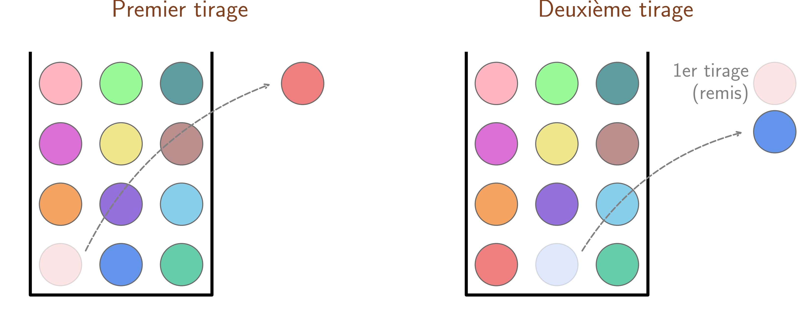
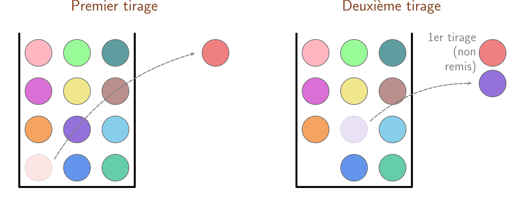
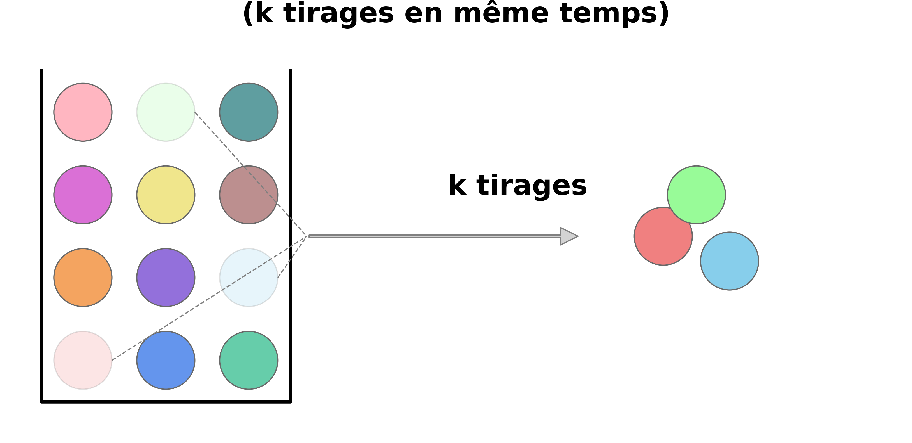
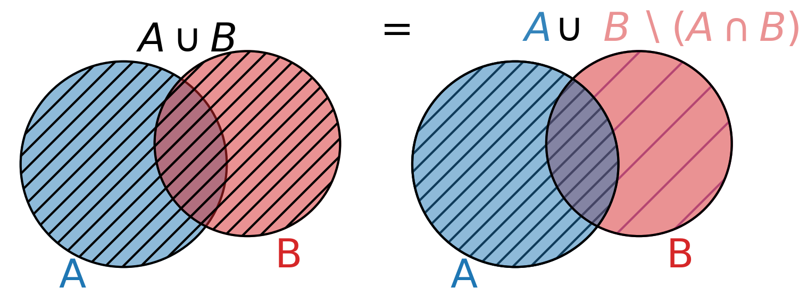
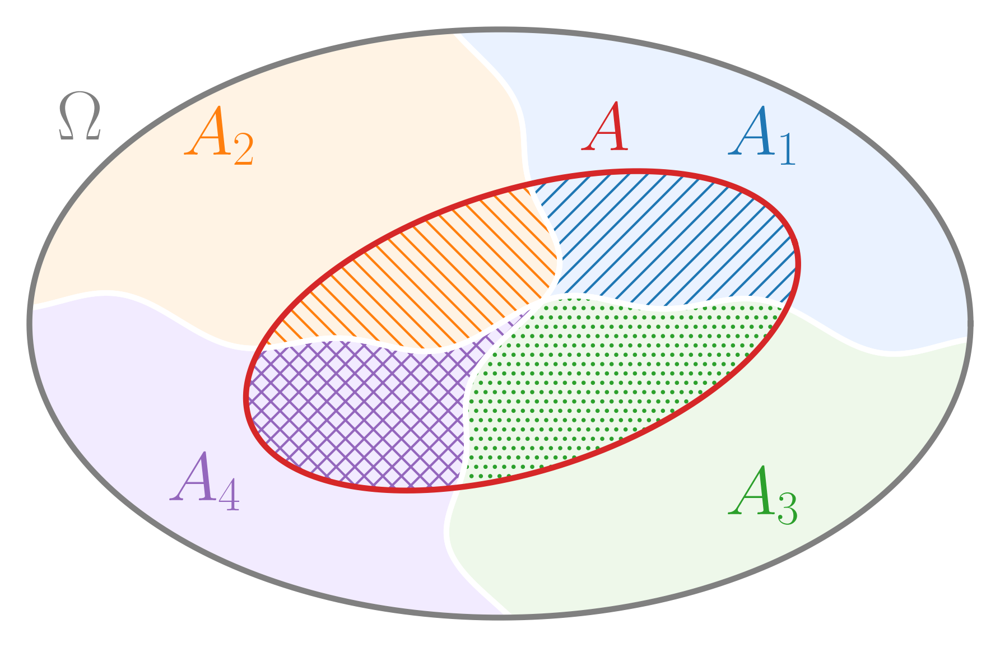
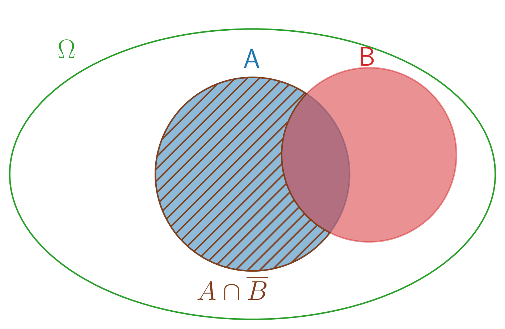
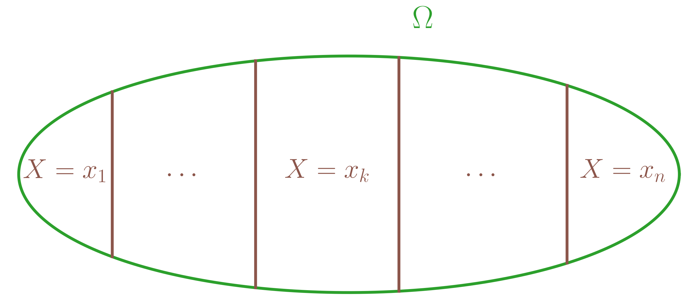

Soit \(E\) un ensemble fini, non vide, le nombre d’éléments de \(E\) est le cardinal de \(E\), noté \(\mathop{\mathrm{card}}E\).
Si \(E = \emptyset\), on pose \(\mathop{\mathrm{card}}E = 0\).
Soit \(n \in \mathbb{N}^{\star}\) et \(E\) un ensemble fini,
Alors,
\[\text{$E$ est de cardinal $n$} \iff \text{il existe une bijection entre $[\![1,n]\!]$ et $E$.}\]
\((\Longrightarrow)\) Si \(E = \left\{x_1,\ldots,x_n\right\}\) (avec \(x_1,\ldots,x_n\) distincts),
alors \(\begin{array}{lllll} f & : & [\![ 1,n ]\!] & \to & E \\ & & k & \mapsto & x_k \end{array}\) est une bijection.
En effet, elle est injective car pour \(k \leq \ell, x_k \leq x_\ell\) et elle est surjective.
\((\Longleftarrow)\) Si il existe une bijection \(f : [\![ 1,n ]\!] \to E\) alors par surjectivité de \(f\), \(E = \mathop{\mathrm{Im}}f = \left\{f(1),\ldots,f(n)\right\}\) où \(f(1),\ldots,f(n)\) sont distincts (par injectivité de \(f\)) donc \(\mathop{\mathrm{card}}E = n\).
On considère \(E\) un ensemble quelconque.
Soient \(A\) et \(B\) deux parties finies de \(E\).
Alors, \(\mathop{\mathrm{card}}(A\cup B) = \mathop{\mathrm{card}}A + \mathop{\mathrm{card}}B - \mathop{\mathrm{card}}(A\cap B)\).
On note \(r = \mathop{\mathrm{card}}(A \cap B)\) et \(A\cap B = \left\{x_1,\ldots,x_r\right\}\) avec \(x_1,\ldots,x_r\) distincts.
En notant \(p = \mathop{\mathrm{card}}A\), \(A \cap B \subset A\) donc il existe \(y_{r+1},\ldots,y_p\) distincts et distincts de \(x_1,\ldots,x_r\) tels que \(A = \left\{x_1,\ldots,x_r,y_{r+1},\ldots,y_p\right\}\).
De même, en notant \(q = \mathop{\mathrm{card}}B\), \(A \cap B \subset B\) donc il existe \(z_{r+1},\ldots,z_q\) distincts et distincts de \(x_1,\ldots,x_r\) tels que \(B = \left\{x_1,\ldots,x_r,z_{r+1},\ldots,z_q\right\}\).
Enfin, les \(z_1,\ldots,z_q\) sont distincts des \(y_1,\ldots,y_p\) car sinon ils seraient dans \(A \cap B\).
Donc \(A \cup B = \left\{x_1,\ldots,x_r,y_{r+1},\ldots,y_p,z_{r+1},\ldots,z_q\right\}\) et \(\mathop{\mathrm{card}}(A\cup B) = p+(q-r) = \mathop{\mathrm{card}}A + \mathop{\mathrm{card}}B - \mathop{\mathrm{card}}(A\cap B)\).
(Extension partielle de la proposition [prop:cardinal_union]) Soient \(n \in \mathbb{N}^{\star}, \geq 2\) et \(A_1,\ldots,A_n\) des parties finies de \(E\) deux à deux disjointes, ie telles que pour tout \(i,j \in [\![ 1,n ]\!]\), \(i \neq j \Longrightarrow A_i \cap A_j = \emptyset\).
Alors, \(\bigcup_{i=1}^n A_i\) est finie et \(\mathop{\mathrm{card}}\left(\bigcup_{i=1}^n A_i\right)= \sum_{i=1}^n \mathop{\mathrm{card}}\left(A_i\right)\).
Prouvons ce résultat par récurrence sur \(n\).
Initialisation. Soient \(A_1,A_2\) finies telles que \(A_1 \cap A_2 = \emptyset\).
Alors, \(\mathop{\mathrm{card}}\left(A_1 \cup A_2\right) = \mathop{\mathrm{card}}A_1 + \mathop{\mathrm{card}}A_2 - 0\).
Hérédité. Supposons le résultat vrai pour \(n \in \mathbb{N}^{\star}, \geq 2\) fixée.
On considère alors \(A_1,\ldots,A_n,A_{n+1}\) des parties finies deux à deux disjointes de \(E\).
Par hypothèse de récurrence, \(\bigcup_{i=1}^{n} A_i\) est finie donc par par la proposition [prop:cardinal_union], \(\bigcup_{i=1}^{n+1} A_i = \left(\bigcup_{i=1}^n A_i\right) \bigcup A_{n+1}\) est finie et on a
\(\mathop{\mathrm{card}}\left(\bigcup_{i=1}^{n+1} A_i\right) = \mathop{\mathrm{card}}{\bigcup_{i=1}^n A_i} + \mathop{\mathrm{card}}A_{n+1} + \mathop{\mathrm{card}}\left(\left(\bigcup_{i=1}^n A_i\right) \bigcap A_{n+1}\right)\).
Or, par hypothèse de récurrence, \(\mathop{\mathrm{card}}\left(\bigcup_{i=1}^n A_i\right)= \sum_{i=1}^n \mathop{\mathrm{card}}\left(A_i\right)\).
De plus,\(\left(\bigcup_{i=1}^n A_i\right) \bigcap A_{n+1} = \bigcap_{i=1}^n \left(A_i \cap A_{n+1}\right) = \emptyset\).
Donc, finalement, on a bien
\(\mathop{\mathrm{card}}\left(\bigcup_{i=1}^{n+1} A_i\right) = \sum_{i=1}^n \mathop{\mathrm{card}}\left(A_i\right)+\mathop{\mathrm{card}}A_{n+1} = \sum_{i=1}^{n+1} \mathop{\mathrm{card}}\left(A_i\right).\)
Et si on ne suppose pas les ensembles deux à deux disjoints ?
Par exemple, pour \(n=3\), on a \[\begin{aligned} \mathop{\mathrm{card}}\left(A \cup B \cup C\right) & = \mathop{\mathrm{card}}\left(\left(A\cup B\right)\cup C\right) \\ & = \mathop{\mathrm{card}}\left(A \cup B\right) + \mathop{\mathrm{card}}C - \mathop{\mathrm{card}}\left(\left(A\cup B\right)\cap C\right) \text{ par le cas $n=2$} \\ \end{aligned}\]
Or, \(\mathop{\mathrm{card}}(A\cup B) = \mathop{\mathrm{card}}A + \mathop{\mathrm{card}}B - \mathop{\mathrm{card}}(A\cap B)\) et \(\left(A\cup B\right)\cap C = \left(A \cap C\right) \cup \left(B \cap C\right)\) donc toujours par la proposition [prop:cardinal_union],
\(\mathop{\mathrm{card}}\left(\left(A\cup B\right)\cap C\right) = \mathop{\mathrm{card}}\left(A \cap C\right) + \mathop{\mathrm{card}}\left(C \cap C\right) -\mathop{\mathrm{card}}\left(\underbrace{A \cap C\cap B \cap C}_{=A\cap B \cap C}\right)\).
Finalement, on a donc
\[\begin{aligned} \mathop{\mathrm{card}}\left(A \cup B \cup C\right) = & \mathop{\mathrm{card}}A +\mathop{\mathrm{card}}B +\mathop{\mathrm{card}}C \\ & - \mathop{\mathrm{card}}(A\cap B)- \mathop{\mathrm{card}}(A\cap C) - \mathop{\mathrm{card}}(B\cap C) \\ & + \mathop{\mathrm{card}}\left(A\cap B \cap C\right). \end{aligned}\]
En fait, on a une formule plus générale, assez difficile à écrire, appelée la formule du crible.
Soient \(E,F\) deux ensembles finis.
Alors \(E\times F\) est finie et \(\mathop{\mathrm{card}}\left(E \times F\right) = \left(\mathop{\mathrm{card}}E\right)\left(\mathop{\mathrm{card}}F\right)\).
Soit \(n = \mathop{\mathrm{card}}E\), alors \(E\times F = \bigcup_{i=1}^n A_i\) avec \(A_i=\left\{(x_i,y) / y \in F\right\}\).
Or, les \(A_i\) sont deux à deux disjoints.
Donc \(E\times F\) est fini et \(\mathop{\mathrm{card}}\left(E\times F\right) = \sum_{i=1}^n \mathop{\mathrm{card}}A_i\).
De plus, pour tout \(1 \leq i \leq n\), \(\mathop{\mathrm{card}}A_i = \mathop{\mathrm{card}}F\).
Donc \(\mathop{\mathrm{card}}\left(E \times F\right) = n\left(\mathop{\mathrm{card}}F\right) = \left(\mathop{\mathrm{card}}E\right)\left(\mathop{\mathrm{card}}F\right).\)
(Extension de la proposition [prop:cardinal_ensemble_produit])
Soient \(p \in \mathbb{N}^{\star}, \geq 2\) et \(E_1,\ldots,E_p\) des ensembles finis.
Alors, \(\mathop{\mathrm{card}}(E_1\times \ldots\times E_p) = \prod_{k=1}^p \left(\mathop{\mathrm{card}}E_k\right)\).
Montrons ce résultat par récurrence sur \(p\).
Initialisation. Le cas \(p=2\) a été démontré avec la proposition [prop:cardinal_ensemble_produit].
Hérédité. Supposons le résultat vrai pour \(p \in \mathbb{N}^{\star}, \geq 2\) fixé.
Soient \(E_1,\ldots,E_p,E_{p+1}\) des ensembles finis alors
\[\begin{aligned} \mathop{\mathrm{card}}(E_1\times \ldots\times E_p \times E_{p+1}) & = \mathop{\mathrm{card}}\left(\left(E_1\times \ldots\times E_p\right)\times E_{p+1}\right) \\ & = \mathop{\mathrm{card}}\left(E_1\times \ldots\times E_p\right)\times \mathop{\mathrm{card}}\left(E_{p+1}\right) \text{ par la proposition~\ref{prop:cardinal_ensemble_produit}} \\ & = \prod_{k=1}^{p+1} \left(\mathop{\mathrm{card}}E_k\right) \end{aligned}\]
En particulier, \(\mathop{\mathrm{card}}E^p = \left(\mathop{\mathrm{card}}E\right)^p\).
Soient \(E,F\) deux ensembles finis et \(f \in \mathscr{F}(E,F)\).
Alors, \(\begin{array}{ll} &\mathop{\mathrm{card}}\mathop{\mathrm{Im}}f \leq \mathop{\mathrm{card}}E \\ \text{ et }&\mathop{\mathrm{card}}\mathop{\mathrm{Im}}f = \mathop{\mathrm{card}}E \iff f \text{ est injective.} \end{array}\)
Notons \(E = \left\{x_1,\ldots,x_n\right\}\).
\(\mathop{\mathrm{Im}}f\) est l’ensemble des \(f(x_1),\ldots,f(x_n)\) qui ne sont pas nécessairement tous distincts donc \(\mathop{\mathrm{card}}\mathop{\mathrm{Im}}f \leq n = \mathop{\mathrm{card}}E\).
De plus, \[\begin{aligned} \mathop{\mathrm{card}}\mathop{\mathrm{Im}}f < \mathop{\mathrm{card}}E & \iff \exists i,j \in [\![ 1,n]\!] \text{ tels que } i \neq j \text{ et }f(x_i) = f(x_j) \\ & \iff f \text{ non injective.} \end{aligned}\]
Soient \(E,F\) deux ensembles finis et \(f \in \mathscr{F}(E,F)\).
Alors,
Si \(f\) est injective, \(\mathop{\mathrm{card}}E \leq \mathop{\mathrm{card}}F\),
si \(f\) est surjective, \(\mathop{\mathrm{card}}E \geq \mathop{\mathrm{card}}F\),
si \(f\) est bijective, \(\mathop{\mathrm{card}}E = \mathop{\mathrm{card}}F\).
Par la proposition [prop:card_Imf_card_E], si \(f\) est injective, \(\mathop{\mathrm{card}}\mathop{\mathrm{Im}}f = \mathop{\mathrm{card}}E\).
Or, \(\mathop{\mathrm{Im}}f \subset F\) donc \(\mathop{\mathrm{card}}\mathop{\mathrm{Im}}f \leq \mathop{\mathrm{card}}F\).
On en déduit donc \(\mathop{\mathrm{card}}E \leq \mathop{\mathrm{card}}F\).
Si \(f\) est surjective, \(\mathop{\mathrm{Im}}f = F\) donc \(\mathop{\mathrm{card}}\mathop{\mathrm{Im}}f = \mathop{\mathrm{card}}F\).
Or, par la proposition [prop:card_Imf_card_E], \(\mathop{\mathrm{card}}\mathop{\mathrm{Im}}f \leq \mathop{\mathrm{card}}E\).
Donc \(\mathop{\mathrm{card}}F \leq \mathop{\mathrm{card}}E\).
Si \(f\) est bijective, \(f\) est injective et surjective donc par ce qui précède, \(\mathop{\mathrm{card}}E = \mathop{\mathrm{card}}F\).
(Calcul du cardinal de \(\mathscr{F}(E,F)\)) Soient \(E,F\) deux ensembles finis alors \(\mathscr{F}(E,F)\) est fini et \(\mathop{\mathrm{card}}\mathscr{F}(E,F) = \left(\mathop{\mathrm{card}}F\right)^{\left(\mathop{\mathrm{card}}E\right)}\).
Notons \(E = \left\{x_1,\ldots,x_n\right\}\) et considérons \(\begin{array}{lllll} \varphi & : & \mathscr{F}(E,F) & \to & F^n \\ & & f & \mapsto & \left(f(x_1),\ldots,f(x_n)\right) \end{array} .\)
Montrons que \(\varphi\) est bijective.
\(\varphi\) est injective car si \(\varphi(f) = \varphi(g)\) avec \(f,g \in \mathscr{F}(E,F)\) alors pour tout \(1 \leq i \leq n, f(x_i) = g(x_i)\) donc \(f=g\).
\(\varphi\) est surjective car si \((y_1,\ldots,y_n) \in F^n\), alors \(\begin{array}{lllll} f & : & E & \to & F \\ & & x_i & \mapsto & y_i \text{ pour tout $1\leq i \leq n$.} \end{array} \in \mathscr{F}(E,F)\) vérifie \(\varphi(f) = (y_1,\ldots,y_n)\).
Donc par la proposition [prop:cardinal_injective_surjectivE_bijective], \(\mathop{\mathrm{card}}\mathscr{F}(E,F) = \mathop{\mathrm{card}}F^n = \left(\mathop{\mathrm{card}}F\right)^n = \left(\mathop{\mathrm{card}}F\right)^{\left(\mathop{\mathrm{card}}E\right)}\).
\(\mathscr{F}(E,F)\) est parfois noté \(F^E\)
Soient \(E,F\) deux ensembles finis tels que \(\mathop{\mathrm{card}}E = \mathop{\mathrm{card}}F\).
Alors, soit \(f \in \mathscr{F}(E,F)\),
\[f \text{ injective } \iff f \text{ surjective } \iff f \text{ bijective }.\]
Il suffit de montrer \(f \text{ injective } \iff f \text{ surjective }\).
\((\Longrightarrow)\) Si \(f\) est injective, alors par la proposition [prop:card_Imf_card_E], \(\mathop{\mathrm{card}}\mathop{\mathrm{Im}}f = \mathop{\mathrm{card}}E\).
Or, \(\mathop{\mathrm{Im}}f \subset F\) et \(\mathop{\mathrm{card}}\mathop{\mathrm{Im}}f = \mathop{\mathrm{card}}E = \mathop{\mathrm{card}}F\).
Donc \(\mathop{\mathrm{Im}}f = F\) et \(f\) est surjective.
\((\Longleftarrow)\) Si \(f\) est surjective, alors \(\mathop{\mathrm{Im}}f = F\) donc \(\mathop{\mathrm{card}}\mathop{\mathrm{Im}}f = \mathop{\mathrm{card}}E\).
Or, \(\mathop{\mathrm{card}}E = \mathop{\mathrm{card}}F\) donc \(\mathop{\mathrm{card}}\mathop{\mathrm{Im}}f = \mathop{\mathrm{card}}E\) et par la proposition [prop:card_Imf_card_E], \(f\) est injective.
(Cardinal de l’ensemble des fonctions injectives de \(E\) dans \(F\)) Soient \(E,F\) deux ensembles finis tels que \(p = \mathop{\mathrm{card}}E\) et \(n =\mathop{\mathrm{card}}F\). On note \(\mathcal{I}(E,F)\) l’ensemble des fonctions injectives de \(E\) dans \(F\).
Alors,
Si \(p > n\), \(\mathcal{I}(E,F) = \emptyset\) donc \(\mathop{\mathrm{card}}\mathcal{I}(E,F) = 0\).
Si \(p \geq n\), \(\mathcal{I}(E,F)\) est fini et \(\mathop{\mathrm{card}}\mathcal{I}(E,F) = n(n-1)\ldots (n-p+1) = \prod_{k=0}^{p-1}(n-k)\).
Si \(p > n\), par la proposition [prop:cardinal_injective_surjectivE_bijective], \(\mathcal{I}(E,F) = \emptyset\) donc \(\mathop{\mathrm{card}}\mathcal{I}(E,F) = 0\).
Si \(p \geq n\), on note \(E = \left\{x_1,\ldots,x_p\right\}\),
construire une injection \(f\) de \(E\) dans \(F\), revient à
Choisir \(f(x_1)\) dans \(F\), ce qui fait \(n\) choix,
Choisir \(f(x_2)\) dans \(F\) avec \(f(x_2) \neq f(x_1)\), ce qui fait \(n-1\) choix,
Choisir \(f(x_3)\) dans \(F\) avec \(f(x_3) \neq f(x_2), f(x_1)\), ce qui fait \(n-2\) choix,
\(\vdots\)
Choisir \(f(x_p)\) dans \(F\) avec \(f(x_3) \neq f(x_{p-1}),\ldots,f(x_2), f(x_1)\), ce qui fait \(n-(p-1) = n-p+1\) choix,
Donc \(\mathop{\mathrm{card}}\mathcal{I}(E,F) = n(n-1)\ldots (n-p+1)\).
En particulier, si \(\mathop{\mathrm{card}}E = \mathop{\mathrm{card}}F\), \(\mathcal{I}(E,F)\) est l’ensemble des bijections dans de \(E\) dans \(F\), de cardinal \(n!\).
Soit \(E\) un ensemble de fini de cardinal \(n\),
un \(k\)-arrangement revient à désigner une fonction injective de \([\![ 1,k]\!]\) dans \(E\) et il y en a donc \(n(n-1)\ldots (n-k+1)\),
soit \(p \in [\![ 0,n ]\!]\), le nombre de parties de \(E\) de cardinal \(p\) est \(\binom{n}{p}\).
\(\sum_{k=0}^n \binom{n}{k} = 2^n\) est le nombre de parties de \(E\).
Pour tout \(n \in \mathbb{N}^{\star}\), \(p \in [\![ 0,n ]\!]\), on a \(\binom{n}{n-p}=\binom{n}{p}\).
Pour tout \(n \in \mathbb{N}^{\star}\), \(p \in [\![ 1,n ]\!]\), on a \(\binom{n}{p} = \binom{n-1}{p}+\binom{n-1}{p-1}\) (qui permet de construire le triangle de Pascal).
Pour tout \(n \in \mathbb{N}^{\star}\), \(p \in [\![ 0,n ]\!]\), \(\binom{n}{p} = \frac{n!}{p!(n-p)!}\).
Pour tout \(n \in \mathbb{N}^{\star}\), \(p \in [\![ 1,n ]\!]\), \(p\binom{n}{p} = n\binom{n-1}{p-1}\).
On cherche à calculer des probabilités d’événements (au sens usuel) lors d’une expérience aléatoire (dont le résultat dépend du hasard) en modélisant l’expérience considérée.
Comme exemples classiques d’expériences, on a
On lance un dé à \(6\) faces et on observe le résultat obtenu,
On tire une boule dans une urne contenant des boules blanches et noire et on observe la couleur de la boule tirée,
On lance une pièce \(N\) fois et on observe la suite de piles et de faces obtenues.
Pour cela, on cherche à calculer la probabilité d’événement en utilisant des "probabilités élémentaires".
Par exemple, si on repart du lancer du dé à \(6\) faces, numérotées de \(1\) à \(6\) et qu’on cherche à obtenir la probabilité d’obtenir un nombre pair ie \(2,4\) ou 6.
Alors, supposant connues \(\begin{array}{ll} p_2, & \text{ la probabilité d'obtenir un $2$}, \\ p_4, & \text{ la probabilité d'obtenir un $4$}, \\ p_6, & \text{ la probabilité d'obtenir un $6$}, \end{array}\), la probabilité de l’événement "obtenir un nombre pair" est \(p_2+p_4+p_6\).
On considère une expérience aléatoire. Alors, l’ensemble des résultats possibles est noté \(\Omega\) et est appelé l’univers.
On supposera toujours \(\Omega\) fini, dans le cadre du cours de MPSI.
Pour l’expérience : on lance un dé à \(6\) faces numérotées de \(1\) à \(6\),
on peut choisir \(\Omega = [\![ 1,6 ]\!]\). On peut aussi choisir \(\Omega = [\![ 1,7 ]\!]\) mais cela n’a pas d’intérêt.
Pour l’expérience : on lance deux fois un dé à \(6\) faces numérotées de \(1\) à \(6\),
on peut choisir \(\Omega = \left\{(i,j)/ i,j \in [\![ 1,6 ]\!]\right\}= [\![ 1,6 ]\!]^2\).
On considère une urne et on note \(E\) l’ensemble des boules contenues dans cette urne. Il y a alors différentes façons de faire \(k\) tirages (avec \(k \geq 1\)) dans cette urne :
Soit à chaque tirage, on tire une boule puis on la remet dans l’urne pour mener le prochain tirage.
On parle alors de tirages avec remise
et on peut choisir
\(\Omega = \left\{\left(B_1,\ldots,B_k\right) / \forall 1 \leq i \leq k, B_i \in E\right\} = E^k\).

Soit à chaque tirage, on tire une boule puis on ne la remet pas dans l’urne pour mener le prochain tirage.
On parle alors de tirages sans remise
et on peut choisir
\(\Omega\) comme l’ensemble des \(k\)-arrangements de \(E\).

Soit, on effectue les \(k\) tirages simultanément; on prend à pleine main \(k\) boules en même temps.
On parle de tirages simultanés
et on peut choisir \(\Omega = \mathscr{P}_k(E)\), l’ensemble des parties de \(E\) à \(k\) éléments.

Pour l’expérience : on lance un dé à \(6\) faces numérotées de \(1\) à \(6\),, on a \(\Omega = [\![ 1,6 ]\!]\).
Alors, l’événement (au sens usuel) : "obtenir un numéro pair" peut être compris comme la partie \(A = \left\{2,4,6\right\} \subset \Omega\), qui correspond aux issues qui se réalisent avec l’événement.
On considère une expérience aléatoire et son univers \(\Omega\).
Un événement est une partie de \(\Omega\).
Si \(A = \Omega\), l’événement est certain,
Si \(A = \emptyset\), l’événement est impossible,
Si \(A \in \mathscr{P}(\Omega)\), l’événement contraire de \(A\) est \(\Omega \setminus A\), noté \(\overline{A}\),
Soient \(A,B \in \mathscr{P}(\Omega)\), \(\begin{array}{ll} A\cap B & \text{ est aussi noté } \underline{A \text{ et }B} \\ A\cup B & \text{ est aussi noté } \underline{A \text{ ou }B} \end{array}\),
Soient \(A,B \in \mathscr{P}(\Omega)\), \(A\) et \(B\) sont dits incompatibles si \(A \cap B = \emptyset\).
On considère une expérience aléatoire et son univers \(\Omega\).
\[\bigcup_{j=1}^n A_j = \Omega \text{ et }\forall i,j \in [\![ 1,n ]\!], i\neq j \Longrightarrow A_i \cap A_j = \emptyset (\text{deux à deux disjoints}).\]
Soit \(\Omega\) un ensemble fini non vide.
Une probabilité sur \(\Omega\) est une application \(\mathbb{P}: \mathscr{P}(\Omega) \to [0,1]\) telle que
\(\mathbb{P}(\Omega) = 1\),
Pour tout \(A,B \in \mathscr{P}(\Omega)\),
\[A\cap B = \emptyset \Longrightarrow \mathbb{P}(A\cup B) = \mathbb{P}(A)+\mathbb{P}(B).\]
Dans ce cas, \((\Omega,\mathbb{P})\) est appelé un espace probabilisé.
Si on repart du lancer du dé à \(6\) faces, numérotées de \(1\) à \(6\) et qu’on cherche à obtenir la probabilité d’obtenir un nombre pair ie \(2,4\) ou 6.
On a alors \(\Omega = [\![ 1,6 ]\!]\) et cet événement se modélise par \(A = \left\{2,4,6\right\} \subset \Omega\).
Si on munit \(\Omega\) d’une probabilité \(\mathbb{P}\), on a, comme recherché en introduction,
\[\begin{aligned} \mathbb{P}(A) & = \mathbb{P}\left(\left\{2,4,6\right\}\right) \\ & = \mathbb{P}\left(\left\{2,4\right\} \cup \left\{6\right\}\right) \\ & = \mathbb{P}\left(\left\{2,4\right\}\right) + \mathbb{P}\left(\left\{6\right\}\right) \text{ car $\left\{2,4\right\}\cap\left\{6\right\} = \emptyset$} \\ & = \mathbb{P}\left(\left\{2\right\}\cup\left\{4\right\}\right) + \mathbb{P}\left(\left\{6\right\}\right) \\ & = \mathbb{P}\left(\left\{2\right\}\right)+\mathbb{P}\left(\left\{4\right\}\right) + \mathbb{P}\left(\left\{6\right\}\right) \text{ car $\left\{2\right\}\cap\left\{3\right\} = \emptyset$.} \\ \end{aligned}\]
Soit \((\Omega,\mathbb{P})\) un espace probabilisé.
Alors, \(\mathbb{P}\left(\emptyset\right) = 0\).
\(\mathbb{P}(\Omega) = \mathbb{P}(\Omega \cup \emptyset) = \mathbb{P}(\Omega)+\mathbb{P}\left(\emptyset\right)\) car \(\Omega \cap \emptyset = \emptyset\) donc \(1 = 1+\mathbb{P}\left(\emptyset\right) \iff \mathbb{P}\left(\emptyset\right) = 0.\)
Soit \((\Omega,\mathbb{P})\) un espace probabilisé.
Soit \(A \in \mathscr{P}(\Omega)\), alors \(\mathbb{P}(\overline{A}) = 1-\mathbb{P}(A)\).
\(\Omega = A \cup \overline{A}\) avec \(A \cap \overline{A} = \emptyset\)
donc \(\mathbb{P}(\Omega) = \mathbb{P}( A \cup \overline{A}) \iff 1 = \mathbb{P}(A) +\mathbb{P}(\overline{A}) \iff \mathbb{P}(\overline{A}) = 1-\mathbb{P}(A)\).
Soient \((\Omega,\mathbb{P})\) un espace probabilisé et \(A,B \in \mathscr{P}(\Omega)\).
Alors,
\[\mathbb{P}(A\cup B) = \mathbb{P}(A)+\mathbb{P}(B)-\mathbb{P}(A\cap B).\]
\[\quad\]
Remarquons, comme illustré ci-contre, que \(A \cup B = A \cup (B\setminus (A\cap B))\).
De plus, \(A \cap (B\setminus (A\cap B)) = \emptyset\).
On a donc \(\mathbb{P}(A\cup B) = \mathbb{P}(A)+\mathbb{P}(B\setminus (A\cap B))\).
Or, \(B = \left(B\setminus (A\cap B)\right) \cup \left(A \cap B\right)\) et \(\left(B\setminus (A\cap B)\right) \cap \left(A \cap B\right) = \emptyset\).
donc \(\mathbb{P}(B) = \mathbb{P}\left(B\setminus (A\cap B)\right) +\mathbb{P}\left(A \cap B\right)\).

Finalement, on obtient finalement \(\mathbb{P}\left(B\setminus (A\cap B)\right) = \mathbb{P}(B)-\mathbb{P}\left(A \cap B\right)\) puis \[\mathbb{P}(A\cup B) = \mathbb{P}(A)+\mathbb{P}(B)-\mathbb{P}(A\cap B).\]
(Extension partielle de la proposition [prop:cardinal_union]) Soient \((\Omega,\mathbb{P})\) un espace probabilisé, \(n \in \mathbb{N}^{\star}, \geq 2\) et \(A_1,\ldots,A_n \in \mathscr{P}(Omega)\) deux à deux disjointes. Alors,
\[\mathbb{P}\left(\bigcup_{i=1}^n A_i\right)= \sum_{i=1}^n \mathbb{P}\left(A_i\right).\]
Prouvons ce résultat par récurrence sur \(n\).
Initialisation. Soient \(A_1,A_2\) finies telles que \(A_1 \cap A_2 = \emptyset\).
Alors, \(\mathbb{P}\left(A_1 \cup A_2\right) = \mathbb{P}\left( A_1 \right)+ \mathbb{P}\left(A_2\right)\) par définition d’une probabilité.
Hérédité. Supposons le résultat vrai pour \(n \in \mathbb{N}^{\star}, \geq 2\) fixée.
On considère alors \(A_1,\ldots,A_n,A_{n+1} \in \mathscr{P}(\Omega)\), deux à deux disjointes.
On a, par la proposition [prop:proba_union],
\(\mathbb{P}\left(\bigcup_{i=1}^{n+1} A_i\right) = \mathbb{P}\left(\bigcup_{i=1}^n A_i\right) + \mathbb{P}\left(A_{n+1}\right) + \mathbb{P}\left(\left(\bigcup_{i=1}^n A_i\right) \bigcap A_{n+1}\right)\).
Or, par hypothèse de récurrence, \(\mathbb{P}\left(\bigcup_{i=1}^n A_i\right)= \sum_{i=1}^n \mathbb{P}\left(A_i\right)\).
De plus,\(\left(\bigcup_{i=1}^n A_i\right) \bigcap A_{n+1} = \bigcap_{i=1}^n \left(A_i \cap A_{n+1}\right) = \emptyset\).
Donc, finalement, on a bien
\[\mathbb{P}\left(\bigcup_{i=1}^{n+1} A_i\right) = \sum_{i=1}^n \mathbb{P}\left(A_i\right)+\mathbb{P}\left(A_{n+1}\right) = \sum_{i=1}^{n+1} \mathbb{P}\left(A_i\right).\]
(Formule des probabilités totales) Alors, soit \(A \in \mathscr{P}(\Omega)\),
\[\mathbb{P}\left(A\right)= \sum_{i=1}^n \mathbb{P}\left(A \cap A_i\right).\]
On a donc \(A = A\cap \Omega = A\cap\left(\bigcup_{i=1}^n A_i\right) = \bigcup_{i=1}^n \left(A_i \cap A\right)\) et pour \(i \neq j\), \(\left(A_i \cap A\right) \cap \left(A_j \cap A\right) \subset A_i \cap A_j = \emptyset\).
On en déduit, par la proposition [prop:proba_union_disjointe] que
\[\mathbb{P}\left(A\right)= \sum_{i=1}^n \mathbb{P}\left(A \cap A_i\right).\]

Soient \((\Omega,\mathbb{P})\) un espace probabilisé et \(A,B \in \mathscr{P}(\Omega)\) telles que \(A \subset B\).
Alors, \[\begin{aligned} \mathbb{P}(B \setminus A) &= \mathbb{P}(B) - \mathbb{P}(A) \\ \text{ et }\mathbb{P}(A) &\leq \mathbb{P}(B) \end{aligned}\]
On a \(B = (B \setminus A) \cup A\) avec \((B \setminus A) \cap A = \emptyset\).
Donc \(\mathbb{P}(B) = \mathbb{P}((B \setminus A)) + \mathbb{P}(A) \iff \mathbb{P}(B \setminus A) =\mathbb{P}(B) - \mathbb{P}(A)\).
On a aussi \(\mathbb{P}(B \setminus A) \geq 0\) donc \(\mathbb{P}(A) \leq \mathbb{P}(B)\).
En revanche, dans le contexte de la question précédente, on a
\[\mathbb{P}(A) = \mathbb{P}(B) \centernot{\Longrightarrow} A = B.\]
Si on reconsidère le lancé de dé à \(6\) faces avec \(\Omega = [\![ 1,7]\!]\), on a \(\mathbb{P}([\![ 1,6]\!]) = 1 = \mathbb{P}(\Omega)\) mais \([\![ 1,6]\!] \neq \Omega\). En fait, il faut se méfier des événements de probabilité nulle. On dit d’un tel événement (ici, \(\left\{7\right\}\)) qu’il est négligeable.
Soient \(\Omega = \left\{\omega_1,\ldots,\omega_n\right\}\) un ensemble fini de cardinal \(n \geq 1\).
Soient \(p_1,\ldots,p_n\) des réels positifs tels que \(\sum_{k=1}^n p_k = 1\).
Alors, il existe une unique probabilité sur \(\Omega\) telle que
\[\forall k \in [\![1,n ]\!], \mathbb{P}\left(\left\{\omega_k\right\}\right) = p_k.\]
Alors, pour \(\omega \in \Omega\), \(\left\{\omega\right\}\) est un événement élémentaire et \(\mathbb{P}\left(\left\{\omega\right\}\right)\) est une probabilité élémentaire.
Unicité si existence. Supposons qu’une telle probabilité \(\mathbb{P}\) existe.
Alors, soit \(A \in \mathscr{P}(\Omega)\) non vide telle que \(A = \left\{\omega_{i1},\ldots,\omega_{ip}\right\}\) avec \(i_1,\ldots,i_p \in [\![ 1,n ]\!]\) distincts, on a \(\left\{\omega_k\right\}\cap \left\{\omega_\ell\right\} = \emptyset\) pour \(k\neq \ell\) et
\(\mathbb{P}(A) = \mathbb{P}\left(\bigcup_{k=1}^p \left\{\omega_k\right\}\right) =\sum_{k=1}^p p_{ik}\).
Donc \(\mathbb{P}\) est uniquement déterminée sur \(\mathscr{P}(\Omega)\) et est unique.
Existence. Posons \(\begin{array}{lllll} \mathbb{P} & : & \mathscr{P}(\Omega) & \to & \mathbb{R}^{+} \\ & & A & \mapsto & \mathbb{P}\left(\bigcup_{k=1}^p \left\{\omega_k\right\}\right) \text{ si $A = \left\{\omega_{i1},\ldots,\omega_{ip}\right\}$} \end{array}\) et montrons que c’est bien une probabilité sur \(\Omega\).
\(\mathbb{P}\) est à valeurs dans \([0,1]\) car pour \(A \in \mathscr{P}(\Omega)\), \(\mathbb{P}(A) \leq \sum_{k=1}^n p_k = 1\).
\(\mathbb{P}(\Omega) = \mathbb{P}\left\{\left\{\omega_1,\ldots,\omega_n\right\}\right\} = \sum_{k=1}^n p_k = 1\).
Pour \(A, B \in \mathscr{P}(\Omega)\) telles que \(A \cap B = \emptyset\).
Alors, en notant \(A=\left\{\omega_{i1},\ldots,\omega_{ip}\right\}\) et \(B = \left\{\omega_{j1},\ldots,\omega_{jq}\right\}\), on a les ensembles \(\left\{\omega_{i1}\right\},\ldots,\left\{\omega_{ip}\right\},\ldots,\left\{\omega_{j1}\right\},\ldots,\left\{\omega_{jq}\right\}\) qui sont deux à deux disjoints.
De plus,
\(\mathbb{P}(A \cup B) = \mathbb{P}\left(\bigcup_{k=1}^p \left\{\omega_{ik}\right\} \cup \bigcup_{\ell=1}^q \left\{\omega_{j\ell}\right\}\right) = \sum_{k=1}^p p_{ik}+\sum_{\ell=1}^q p_{j\ell} = \mathbb{P}(A)+\mathbb{P}(B)\).
Enfin, on a bien \(\mathbb{P}(\left\{\omega_k\right\}) = p_k\) pour tout \(1 \leq k \leq n\).
La probabilité uniforme sur \(\Omega\) est la probabilité \(\mathbb{P}\) telle que pour tout \(\omega \in \Omega\), \(\mathbb{P}\left(\left\{\omega\right\}\right) = p\) avec \(p\) indépendant de \(\omega\).
Si \(\mathop{\mathrm{card}}\Omega = n\), on a alors \(1 = \mathbb{P}(\Omega) = \sum_{\omega \in \Omega} \mathbb{P}\left(\left\{\omega\right\}\right) = np\) donc \(p=\frac{1}{n}\).
De plus, si \(A \in \mathscr{P}(\Omega)\), on a \(\mathbb{P}(A) = \left(\mathop{\mathrm{card}}A\right)p = \frac{\mathop{\mathrm{card}}A}{n}=\frac{\mathop{\mathrm{card}}A}{\mathop{\mathrm{card}}\Omega}\).
Exercice — On lance un dé à \(6\) faces et on considère \(\Omega = [\![ 1,6 ]\!]\).
De plus, on suppose qu’il existe \(\alpha \in \mathbb{R}\) tel que pour tout \(1 \leq k \leq 6\), \(\mathbb{P}\left(\left\{k\right\}\right) = \alpha k\).
Soit \(A\) l’événement "le numéro obtenu est pair", calculer \(\mathbb{P}(A)\).
Corrigé — Commençons par déterminer \(\alpha\).
On a \(1 = \sum_{k=1}^6 \alpha k = \alpha \frac{6\times 7}{2} = 21\alpha\) donc \(\alpha = \frac{1}{21}\).
On a donc \(\mathbb{P}(A) = \mathbb{P}\left(\left\{2\right\}\right)+ \mathbb{P}\left(\left\{4\right\}\right)+ \mathbb{P}\left(\left\{6\right\}\right) = \alpha(2+4+6) = \frac{12}{21} = \frac{4}{7}.\)
Observons ce qu’on cherche à modéliser avec quelques calculs sur une probabilité uniforme pour deviner la définition à suivre.
Considérons \((\Omega,\mathbb{P})\) un espace probabilisé et \(A,B \in \mathscr{P}(\Omega)\) tels que \(\mathbb{P}(A) > 0\). On a alors \(\mathbb{P}(A) = \frac{\mathop{\mathrm{card}}A}{\mathop{\mathrm{card}}\Omega}\) et \(\mathbb{P}(B) = \frac{\mathop{\mathrm{card}}B}{\mathop{\mathrm{card}}\Omega}\).
On cherche la probabilité que l’événement \(B\) soit réalisé sachant que l’événement \(A\) est réalisé.
En notant \(N_1 = \mathop{\mathrm{card}}A\), on considère parmi les éléments de \(A\), les \(N_2\) éléments pour lesquels \(B\) se réalise. La probabilité recherchée est alors \(\frac{N_2}{N_1}\).
Or, \(N_2 = \mathop{\mathrm{card}}A \cap B\) (on compte les éléments à la fois dans \(A\) et dans \(B\)).
Donc la probabilité recherchée se réécrit \(\frac{N_2}{N_1} = \frac{\mathop{\mathrm{card}}A \cap B}{\mathop{\mathrm{card}}A} = \frac{\frac{\mathop{\mathrm{card}}A \cap B}{\mathop{\mathrm{card}}\Omega}}{\frac{\mathop{\mathrm{card}}A}{\mathop{\mathrm{card}}\Omega}} = \frac{\mathbb{P}(A\cap B)}{\mathbb{P}(A)}\).
En particulier, elle vaut \(1\) pour \(B = A\). En effet, \(A\) est réalisé assurément sachant que \(A\) est réalisé.
Soit \((\Omega,\mathbb{P})\) un espace probabilisé et \(A \in \mathscr{P}(\Omega)\) tel que \(\mathbb{P}(A) > 0\).
On considère \(\begin{array}{lllll} \mathbb{P}_A & : & \mathscr{P}(\Omega) & \to & \mathbb{R}^+ \\ & & B & \mapsto & \frac{\mathbb{P}(A\cap B)}{\mathbb{P}(A)} \end{array}\).
Alors, \(\mathbb{P}_A\) est une probabilité sur \(\Omega\), appelée la probabilité conditionnelle sachant \(A\).
\(\mathbb{P}_A(B)\) est aussi noté \(\mathbb{P}(B\mid A)\).
Montrons que \(\mathbb{P}_A\) est effectivement une probabilité sur \(\Omega\).
\(\mathbb{P}_A\) est à valeurs dans \([0,1]\) car pour \(B \in \mathscr{P}(\Omega)\), \(A \cap B \subset A\) donc \(\mathbb{P}(A \cap B) \leq \mathbb{P}(A)\) et \(\mathbb{P}_A(B) \leq 1\).
\(\mathbb{P}_A(\Omega) = \frac{\mathbb{P}(A \cap \Omega)}{\mathbb{P}(A)} = \frac{\mathbb{P}(A)}{\mathbb{P}(A)} = 1\).
Soient \(B,C \in \mathscr{P}(\Omega)\) tels que \(B\cap C = \emptyset\).
Alors, \((A\cap B)\cap (A\cap C) = A\cap (B\cap C) = \emptyset\) donc \(\mathbb{P}((A\cap B)\cup (A\cap C))= \mathbb{P}(A\cap B)+\mathbb{P}(A\cap C)\) puis
\[\begin{aligned} \mathbb{P}_A(B\cup C) & = \frac{\mathbb{P}(A\cap(B \cup C))}{\mathbb{P}(A)}\\ & = \frac{\mathbb{P}((A\cap B)\cup (A\cap C))}{\mathbb{P}(A)}\\ & = \frac{ \mathbb{P}(A\cap B)+\mathbb{P}(A\cap C)}{\mathbb{P}(A)} \\ & = \mathbb{P}_A(B) + \mathbb{P}_A(C). \end{aligned}\]
(Formule des probabilités composées) Soient \((\Omega,\mathbb{P})\) un espace probabilisé et \(A_1,\ldots,A_n\) (\(n\geq 2\)) tels que \(\mathbb{P}(A_1 \cap \ldots \cap A_{n-1}) > 0\).
Alors,
\[\mathbb{P}(A_1 \cap \ldots \cap A_n) = \mathbb{P}(A_n \mid A_1 \cap \ldots \cap A_{n-1}) \mathbb{P}(A_{n-1} \mid A_1 \cap \ldots \cap A_{n-2}) \ldots \mathbb{P}(A_2 \mid A_1) \mathbb{P}(A_1).\]
D’abord, commençons par remarquer que l’on peut bien conditionner par \(A_1\cap \ldots \cap A_k\) pour \(1 \leq k \leq n-1\) car \(A_1 \cap \ldots \cap A_{n-1} \subset A_1\cap \ldots \cap A_k\) donc \(\mathbb{P}(A_1\cap \ldots \cap A_k) > 0\).
Ensuite, prouvons le résultat par récurrence sur \(n\).
Initialisation. Pour \(n=2\),
\(\mathbb{P}(A_1 \cap A_2) = \frac{\mathbb{P}(A_1 \cap A_2)}{\mathbb{P}(A_1)}\mathbb{P}(A_1) = \mathbb{P}(A_2 \mid A_1) \mathbb{P}(A_1)\).
Hérédité. Supposons le résultat vrai pour \(n \in \mathbb{N}, \geq 2\) fixé.
Soient \(A_1,\ldots,A_{n+1}\) tels que \(\mathbb{P}(A_1 \cap \ldots \cap A_{n}) > 0\).
Alors, on a \(\mathbb{P}(A_1 \cap \ldots \cap A_{n-1}) > 0\) et par hypothèse de récurrence appliquée aux \(n\) événements \(A_1 \cap A_2,A_3,\ldots,A_{n+1}\), on a \[\begin{aligned} & \mathbb{P}(A_1 \cap \ldots \cap A_{n+1}) \\ & = \mathbb{P}(\left(A_1\cap A_2\right)\cap A_3 \cap \ldots \cap A_{n+1}) \\ & = \mathbb{P}(A_{n+1} \mid A_1 \cap \ldots \cap A_{n}) \mathbb{P}(A_{n} \mid A_1 \cap \ldots \cap A_{n-1}) \ldots \mathbb{P}(A_3 \mid A_1 \cap A_2) \mathbb{P}(A_1\cap A_2). \end{aligned}\] Enfin, en utilisant le cas \(n=2\), on conclut \[\begin{aligned} & \mathbb{P}(A_1 \cap \ldots \cap A_{n+1}) \\ & = \mathbb{P}(A_{n+1} \mid A_1 \cap \ldots \cap A_{n}) \mathbb{P}(A_{n} \mid A_1 \cap \ldots \cap A_{n-1}) \ldots \mathbb{P}(A_3 \mid A_1 \cap A_2) \mathbb{P}(A_2 \mid A_1) \mathbb{P}(A_1). \end{aligned}\]
Exercice — Une urne contient \(n\) boules noire et \(b\) boules blanches (avec \(n,b \geq 1\)).
On tire \(2\) boules successivement sans remise et on considère les deux événements \(\begin{array}{ll} A: & \text{«~on obtient une boule noire lors du premier tirage ~»} \\ B: & \text{«~on obtient une boule blanche lors du deuxème tirage ~»} \end{array}\).
Calculer \(\mathbb{P}(B\mid A)\).
Corrigé —
Première méthode: Après le premier tirage, il reste \(n+b-1\) boules dans l’urne. Dans le cas où une boule noire a été tirée lors du premier tirage, il y a toujours \(b\) boules blanches dans l’urne donc \(\mathbb{P}(B\mid A) = \frac{b}{b+n-1}\).
Deuxième méthode. On note \(E\) l’ensemble des boules, on considère \(\Omega\) l’ensemble des \(2\)-arrangements de \(E\) et \(\mathbb{P}\) la probabilité uniforme sur \(\Omega\).
On a \(\mathbb{P}(B\mid A) = \frac{\mathbb{P}(A \cap B)}{\mathbb{P}(A)}\) et
\(\mathbb{P}(A) = \frac{\mathop{\mathrm{card}}A}{\mathop{\mathrm{card}}\Omega}\) avec \(\mathop{\mathrm{card}}\Omega = (n+b)(n+b-1)\) et \(\mathop{\mathrm{card}}A = n(n+b-1)\) (choix d’une boule blanche puis une boule quelconque parmi les restantes) donc \(\mathbb{P}(A) = \frac{n}{n+b}\).
\(\mathbb{P}(A\cap B) = \frac{\mathop{\mathrm{card}}A\cap B}{\mathop{\mathrm{card}}\Omega}\) avec \(\mathop{\mathrm{card}}\Omega = (n+b)(n+b-1)\) et \(\mathop{\mathrm{card}}A\cap B = nb\) (choix d’une boule blanche puis une boule noire) donc \(\mathbb{P}(A \cap B ) = \frac{nb}{(n+b)(n+b-1)}\).
Finalement, on a donc \(\mathbb{P}(B\mid A) = \frac{b}{n+b-1}\).
Soient \((\Omega,\mathbb{P})\) un espace probabilisé et \(A,B \in \mathscr{P}(\Omega)\) tels que \(\mathbb{P}(A) > 0, \mathbb{P}(B) > 0\).
Alors, \(\mathbb{P}(A\mid B) = \frac{\mathbb{P}(B \mid A) \mathbb{P}(A)}{\mathbb{P}(B)}\).
\(\mathbb{P}(A\mid B) = \frac{\mathbb{P}(A\cap B)}{\mathbb{P}(B)} = \frac{\mathbb{P}(A\cap B)}{\mathbb{P}(A)}\frac{\mathbb{P}(A)}{\mathbb{P}(B)} = \frac{\mathbb{P}(B \mid A) \mathbb{P}(A)}{\mathbb{P}(B)}.\)
(Formule des probabilités totales et formule de Bayes) Alors, soit \(A \in \mathscr{P}(\Omega)\), pour \(1 \leq i \leq n\), \[\begin{array}{lll} \mathbb{P}(A) & = \sum_{k=1}^n \mathbb{P}(A \mid A_k) \mathbb{P}(A_k) & \text{(Formule des probabilités totales réécrite)} \\ \mathbb{P}(A_i \mid A) & = \frac{\mathbb{P}(A\mid A_i)\mathbb{P}(A_i)}{\sum_{k=1}^n \mathbb{P}(A \mid A_k) \mathbb{P}(A_k)}& \text{(Formule de Bayes)} \end{array}\]
D’abord, le formule des probabilités totales peut être réécrite telle que
\[\mathbb{P}(A) = \sum_{k=1}^n \mathbb{P}(A\cap A_k) = \sum_{k=1}^n \frac{\mathbb{P}(A\cap A_k)}{\mathbb{P}(A_k)}\mathbb{P}(A_k) = \sum_{k=1}^n \mathbb{P}(A \mid A_k) \mathbb{P}(A_k).\]
Ensuite, par la proposition [prop:AschantB_BsachantA], pour \(1 \leq i \leq n\), \(\mathbb{P}(A_i\mid A) = \frac{\mathbb{P}(A \mid A_i) \mathbb{P}(A_i)}{\mathbb{P}(A)}\)
donc \[\mathbb{P}(A_i\mid A) = \frac{\mathbb{P}(A \mid A_i) \mathbb{P}(A_i)}{\sum_{k=1}^n \mathbb{P}(A \mid A_k) \mathbb{P}(A_k)}.\]
Exercice — On considère trois urnes \(U_1,U_2,U_3\) telles que \[\begin{array}{lll} U_1 \text{ contient } & 3 \text{ boules noires} & \text{ et }5 \text{ boules blanches} \\ U_2 \text{ contient } & 5 \text{ boules noires} & \text{ et }3 \text{ boules blanches} \\ U_3 \text{ contient } & 7 \text{ boules noires} & \text{ et }1 \text{ boule blanche}. \end{array}\]
On choisit au hasard une urne et on tire une boule dans cette urne.
Quelle est la probabilité que la boule provienne de l’urne \(U_1\) sachant qu’elle est noire ?
Corrigé — On est typiquement dans une situation où la formule de Bayes. Déterminer la probabilité qu’une boule soit noire sachant l’urne est tout à fait accessible mais le contraire est bien plus délicat.
On note \[\begin{array}{lll} \text{Pour $1 \leq i \leq 3$}, & A_i & \text{«~on a choisi l'urne $U_i$ ~»}, \\ & N & \text{«~La boule tirée est noire ~»}. \end{array}\] et la question est de déterminer \(\mathbb{P}(A_i \mid N)\).
Or, par formule de Bayes,
\[\mathbb{P}(A_1\mid N) = \frac{\mathbb{P}(N \mid A_1) \mathbb{P}(A_1)}{\sum_{k=1}^3 \mathbb{P}(N \mid A_k) \mathbb{P}(A_k)}.\]
et
L’urne est choisie au hasard parmi les trois donc \(\mathbb{P}(A_k) = \frac{1}{3}\) pour \(1 \leq k \leq 3\),
\(\mathbb{P}(N \mid A_1) = \frac{3}{8}\),
\(\mathbb{P}(N \mid A_2) = \frac{5}{8}\),
\(\mathbb{P}(N \mid A_3) = \frac{7}{8}\).
Donc \[\mathbb{P}(A_1\mid N) = \frac{\frac{3}{8}\times \frac{1}{3}}{\frac{3}{8}\times \frac{1}{3}+\frac{5}{8}\times \frac{1}{3}+\frac{7}{8}\times \frac{1}{3}} = \frac{3}{15} = \frac{1}{5}.\]
Exercice — On considère une usine fabriquant des appareils pouvant devenir défectueux au bout de quelques années.
On suppose qu’on dispose d’un test rapide permettant de détecter les appareils pouvant devenir défectueux.
On choisit un appareil et on note \(\begin{array}{ll} D & \text{«~l'appareil deviendra défectueux ~»}, \\ T & \text{«~le test est positif ~»}. \end{array}\)
On suppose \(\mathbb{P}(D) = 10^{-3}, \mathbb{P}(T\mid D) = 0,95\) ((le test détecte correctement \(95\%\) des appareils défectueux) et \(\mathbb{P}(T\mid \overline{D}) = 10^{-2}\) (\(1\%\) des appareils sains sont déclarés positifs).
Calculer \(\mathbb{P}(D \mid T)\).
Corrigé —
\[\mathbb{P}(D \mid T) = \frac{\mathbb{P}(D)\mathbb{P}(T\mid D)}{\mathbb{P}(D)\mathbb{P}(T\mid D)+\mathbb{P}(\overline{D})\mathbb{P}(T\mid \overline{D})} = \frac{\mathbb{P}(D)\mathbb{P}(T\mid D)}{\mathbb{P}(D)\mathbb{P}(T\mid D)+(1-\mathbb{P}(D ))\mathbb{P}(T\mid \overline{D})}.\]
Donc
\[\mathbb{P}(D \mid T)= \frac{10^{-3}\times0,95}{10^{-3}\times0,95+(1-10^{-3})\times 10^{-2}} = \frac{1}{1+\frac{0,999\times 10^{-2}}{10^{-3}\times0,95}} = \frac{1}{1+\frac{999}{95}} = \frac{95}{1094}\approx 9\%.\]
Bien que le test détecte correctement \(95\,\%\) des appareils qui deviendront défectueux, un appareil dont le test est positif n’a qu’environ \(9\,\%\) de chances d’être réellement défectueux. Ce résultat est souvent très surprenant lors d’une première lecture. Il s’explique par le fait que les appareils défectueux sont extrêmement rares : les faux positifs sont donc beaucoup plus nombreux que les vrais positifs.
Dans les deux exemples précédents, il est un peu artificiel de poser un univers \(\Omega\) sachant que les calculs des probabilités sont clairs.
Soient \((\Omega,\mathbb{P})\) un espace probabilisé et \(A,B \in \mathscr{P}(\Omega)\) tels que \(\mathbb{P}(A) > 0\).
Une définition naturelle de « \(B\) indépendant de \(A\) » est \(\mathbb{P}(B \mid A) = \mathbb{P}(B)\). Autrement dit, peu importe que \(A\) soit réalisé ou non, la probabilité que \(B\) soit réalisé demeure la même. On remarque que cela induit \(\frac{\mathbb{P}(A\cap B)}{\mathbb{P}(A)} = \mathbb{P}(B) \iff \mathbb{P}(A\cap B) = \mathbb{P}(B)\mathbb{P}(A)\) et que cette définition est possible même quand \(\mathbb{P}(A) \neq 0\).
Soient \((\Omega,\mathbb{P})\) un espace probabilisé et \(A,B \in \mathscr{P}(\Omega)\).
On dit que \(A\) et \(B\) sont indépendants si \(\mathbb{P}(A\cap B) = \mathbb{P}(A)\mathbb{P}(B)\).
\(\Omega\) et \(\emptyset\) sont indépendants de tout \(A \in \mathscr{P}(\Omega)\).
\(\mathbb{P}(A\cap \Omega) = \mathbb{P}(A) = \mathbb{P}(A)\times 1 = \mathbb{P}(A) \times \mathbb{P}(\Omega)\) et \(\mathbb{P}(A\cap \emptyset) = \mathbb{P}(\emptyset) = \mathbb{P}(A)\times 0 = \mathbb{P}(A) \times \mathbb{P}(\emptyset)\).
Soient \((\Omega,\mathbb{P})\) un espace probabilisé et \(A,B \in \mathscr{P}(\Omega)\) indépendants. Alors,
\(A\) et \(\overline{B}\) sont indépendants,
\(\overline{A}\) et \(\overline{B}\) sont indépendants.
Remarquons d’abord que \(A \cap \overline{B} = A \setminus (A \cap B)\).
On a donc \(\mathbb{P}(A \cap \overline{B}) = \mathbb{P}(A) - \mathbb{P}(A \cap B)\).
Or, par indépendance et \(A\) et \(B\), \(\mathbb{P}(A\cap B) = \mathbb{P}(A)\mathbb{P}(B)\).
Donc \(\mathbb{P}(A \cap \overline{B}) = \mathbb{P}(A)- \mathbb{P}(A)\mathbb{P}(B) = \mathbb{P}(A)(1-\mathbb{P}(B)) = \mathbb{P}(A)\mathbb{P}( \overline{B})\).
On en déduit que \(A\) et \(\overline{B}\) sont indépendants.
Par le même raisonnement, on a donc \(\overline{A}\) et \(\overline{B}\) qui sont indépendants.

Soient \((\Omega,\mathbb{P})\) un espace probabilisé, \(n \in \mathbb{N}^{\star}, \geq 2\) et \(A_1,\ldots,A_n \in \mathscr{P}(\Omega)\),
on dit que \(A_1,\ldots,A_n\) sont deux à deux indépendants si pour tout \(i \neq j\), \(A_i\) et \(A_j\) sont indépendants.
on dit que \(A_1,\ldots,A_n\) sont mutuellement indépendants si pour tout \(k \in [\![ 2,n ]\!]\) et \(i_1,\ldots,i_k \in [\![ 1,n ]\!]\), \(\mathbb{P}\left(A_{i_1}\cap A_{i_2}\cap \ldots \cap A_{i_k}\right) = \mathbb{P}(A_{i1})\mathbb{P}(A_{i_2})\ldots\mathbb{P}(A_{i_n})\)
Soient \((\Omega,\mathbb{P})\) un espace probabilisé, \(n \in \mathbb{N}^{\star}, \geq 2\) et \(A_1,\ldots,A_n \in \mathscr{P}(\Omega)\),
si \(A_1,\ldots,A_n\) sont mutuellement indépendants alors \(A_1,\ldots,A_n\) sont deux à deux indépendants.
Il suffit de prendre \(k=2\) dans la définition de la mutuelle indépendance.
En revanche, la réciproque est fausse comme l’illustre l’exemple suivant.
On lance un dé à \(6\) faces deux fois et on considère \(\Omega = [\![ 1,6]\!]^2\) muni de la probabilité uniforme et \[\begin{array}{ll} A: & \text{«~on obtient un entier pair au premier lancer ~»} \\ B: & \text{«~on obtient un entier impair au deuxième lancer ~»} \\ C: & \text{«~on obtient deux entiers de même parité ~»} \end{array}.\]
Montrons que \(A,B,C\) sont deux à deux indépendants mais pas mutuellement indépendants.
Remarquons d’abord \(\mathbb{P}(A) = \frac{\mathop{\mathrm{card}}A}{\mathop{\mathrm{card}}\Omega} = \frac{3\times}{6^2} = \frac{1}{2}\), \(\mathbb{P}(B) = \frac{1}{2}\) et \(\mathbb{P}(C) = \frac{3\times 3+3\times 3}{6^2} = \frac{1}{2}\).
Puis, \(\mathbb{P}(A\cap B) = \frac{3\times 3}{6^2} = \frac{1}{4}\), \(\mathbb{P}(A\cap C) = \frac{3\times 3}{6^2} = \frac{1}{4}\) et \(\mathbb{P}(B\cap C) = \frac{3\times 3}{6^2} = \frac{1}{4}\).
Donc
\(A\) et \(B\) sont indépendants car \(\mathbb{P}(A)\mathbb{P}(B) = \mathbb{P}(A\cap B)\),
\(A\) et \(C\) sont indépendants car \(\mathbb{P}(A)\mathbb{P}(C) = \mathbb{P}(A\cap C)\),
\(B\) et \(C\) sont indépendants car \(\mathbb{P}(B)\mathbb{P}(C) = \mathbb{P}(B\cap C)\).
Donc \(A,B,C\) sont deux à deux indépendants.
En revanche, \(\mathbb{P}(A\cap B \cap C) = 0 \neq \mathbb{P}(A)\mathbb{P}(B)\mathbb{P}(C) = \frac{1}{8}\).
Soit \((\Omega,\mathbb{P})\) un espace probabilisé et \(E\) un ensemble non vide.
Une variable aléatoire sur \(\Omega\), à valeurs dans \(E\) est une fonction \(\begin{array}{lllll} X & : & \Omega & \to & E \\ & & \omega & \mapsto & X(\omega) \end{array}\).
On lance un dé à 6 faces deux fois tels que \(\Omega = [\![ 1,6]\!]^2\) et un exemple de variable aléatoire est \(\begin{array}{lllll} X & : & \Omega & \to & \mathbb{R} \\ & & (i,j) & \mapsto & i+j \end{array}\).
On lance une pièce de monnaie \(n\) fois (\(n \geq 1\)) tel que \(\Omega = \left\{(\ell_1,\ldots,\ell_n)/ \forall i \in [\![ 1,n ]\!], \ell_i = \text{"Pile" ou "Face"}\right\}.\)
Un exemple de variable aléatoire est
\(\begin{array}{lllll} X & : & \Omega & \to & \mathbb{R} \\ & & (\ell_1,\ldots,\ell_n) & \mapsto & \text{Nombre de $i \in [\![ 1, n]\!]$ tels que $\ell_i=$"Pile"} \end{array}\).
Soient \((\Omega,\mathbb{P})\) un espace probabilisé, \(E\) un ensemble non vide et \(X\) une variable aléatoire sur \(\Omega\), à valeurs dans \(E\).
Soit \(x \in E\), on note \((X=x)\) l’événement \(X^{-1}\left(\left\{x\right\}\right) = \left\{\omega \in \Omega / X(\omega) = x\right\} \in \mathscr{P}(\Omega)\),
Soit \(E'\subset X(\Omega)\), on note \((X\in E')\) l’événement \(X^{-1}\left(E'\right) = \left\{\omega \in \Omega / X(\omega)\in E'\right\} \in \mathscr{P}(\Omega)\),
Si \(E = R\), soit \(x \in \mathbb{R}\), on note \((X \leq x) = X^{-1}\left(]-\infty,x]\right)\) et \((X \geq x) = X^{-1}\left([x,+\infty[\right)\).
Soient \((\Omega,\mathbb{P})\) un espace probabilisé, \(E\) un ensemble non vide et \(X\) une variable aléatoire sur \(\Omega\), à valeurs dans \(E\).
Alors, \(\begin{array}{lllll} \mathbb{P}_X & : & \mathscr{P}(X(\Omega)) & \to & \mathbb{R} \\ & & E' & \mapsto & \mathbb{P}(X\in E') \end{array}\) est une loi de probabilité sur \(X(\Omega)\), appelée la loi de probabilité de \(X\).
Montrons que \(\mathbb{P}_X\) est un loi de probabilité sur \(X(\Omega)\) (qui est fini).
D’abord, \(\mathbb{P}_X\) est à valeurs dans \([0,1]\) car \(\mathbb{P}\) l’est.
Ensuite, \(\mathbb{P}_X(X(\Omega)) = \mathbb{P}(X\in X(\Omega)) = \mathbb{P}(\Omega) = 1\).
Enfin, soient \(E',E'' \in \mathscr{P}(X(\Omega))\) tels que \(E' \cap E'' = \emptyset\).
Alors, \((X \in E')\cap (X\in E'') = \emptyset\).
Donc \(\mathbb{P}_X(E'\cup E'') = \mathbb{P}(X\in(E'\cup E'')) = \mathbb{P}((X\in E')\cup (X\in E'')) = \mathbb{P}(X \in E')+\mathbb{P}(X\in E'') = \mathbb{P}_X(E')+\mathbb{P}_X(E'')\).
En songeant au théorème [thm:construction_proba] et en notant \(X(\Omega) = \left\{x_1,\ldots,x_n\right\}\), \(\mathbb{P}_X\) est la probabilité déterminée par \(\mathscr{P}_X(\left\{x_k\right\}) = \mathbb{P}(X=x_k)\) pour \(1 \leq k \leq n\).
Exercice — Une urne contient \(9\) jetons numérotés de \(1\) à \(9\). On tire simultanément \(3\) jetons dans l’urne tel que \(\Omega = \mathscr{P}_3([\![ 1,9]\!])\) et \(\mathbb{P}\) est la loi uniforme sur \(\Omega\).
Soit \(X\) la variable aléatoire égale au nombre d’entiers pairs obtenus, déterminer la loi de \(X\).
Corrigé — Notons que \(X(\Omega) = [\![ 0,3]\!]\). On cherche alors \(\mathbb{P}(X=k)\) pour \(k \in \left\{0,1,2,3\right\}\).
Pour \(k = 0\), \((X=0) = \left\{\left\{i_1,i_2,i_3\right\} \in \Omega / i_1,i_2,i_3\text{ impairs}\right\}.\)
Or, il y a \(5\) entiers impairs entre \(1\) et \(9\).
Donc \(\mathop{\mathrm{card}}(X=0) = \binom{5}{3}\) et \(\mathbb{P}(X=0) = \frac{ \binom{5}{3}}{ \binom{9}{3}}\).
Pour \(k = 1\),
\((X=1) =\left\{\left\{i_1,i_2,i_3\right\} \in \Omega / \text{ un des entiers } i_1,i_2,i_3\text{ est pair et les deux autres impairs}\right\}.\)
Il y a \(4\) choix pour l’entier pair puis \(\binom{2}{5}\) choix pour les impairs.
Donc \(\mathbb{P}(X=1) = \frac{ 4\binom{5}{2}}{ \binom{9}{3}}\).
Pour \(k = 2\),
\((X=2) =\left\{\left\{i_1,i_2,i_3\right\} \in \Omega / \text{ deux des entiers } i_1,i_2,i_3\text{ sont pairs et l'autre impair}\right\}.\)
Il y a \(\binom{4}{2}\) choix pour les entiers pairs puis \(5\) choix pour l’impair.
Donc \(\mathbb{P}(X=2) = \frac{ 5\binom{4}{2}}{ \binom{9}{3}}\).
Pour \(k = 3\),
\((X=3) = \left\{\left\{i_1,i_2,i_3\right\} \in \Omega / i_1,i_2,i_3\text{ pairs}\right\}.\)
Donc \(\mathbb{P}(X=3) = \frac{ \binom{4}{3}}{ \binom{9}{3}}\).
Soient \((\Omega,\mathbb{P})\) un espace probabilisé, \(E\) un ensemble non vide et \(X\) une variable aléatoire sur \(\Omega\), à valeurs dans \(E\).
Soit \(E'\) un ensemble non vide et \(f:E\to E'\),
Alors, \(Y = f\circ X : \Omega \to E'\) est une variable aléatoire notée \(f(X)\) et appelée variable aléatoire image de \(X\) par \(f\).
Soient \((\Omega,\mathbb{P})\) un espace probabilisé, \(E,E'\) des ensembles non vides, \(f = E \to E'\), \(X\) une variable aléatoire sur \(\Omega\), à valeurs dans \(E\) et \(Y = f(X)\).
Alors, pour tout \(F' \in \mathscr{P}(Y(\Omega))\), \(\mathbb{P}_Y(F') = \mathbb{P}_X(f^{-1}(F'))\).
Soit \(F' \in \mathscr{P}(Y(\Omega))\), \(\mathbb{P}_Y(F') = \mathbb{P}(Y \in F')\) et
\[\begin{aligned} (Y \in F') & = \left\{\omega \in \Omega/ Y(\omega) \in F'\right\} \\ & = \left\{\omega \in \Omega/ f(X(\omega)) \in F'\right\} \\ & = \left\{\omega \in \Omega/ X(\omega) \in f^{-1}(F')\right\} \\ & = (X\in f^{-1}(F')) \end{aligned}\]
Donc \(\mathbb{P}_Y(F') =\mathbb{P}(X\in f^{-1}(F')) = \mathbb{P}_X(f^{-1}(F'))\).
Soit \((\Omega,\mathbb{P})\) un espace probabilisé et \(X:\Omega \to \mathbb{R}\) une variable aléatoire à valeurs réelles telle que \(X(\Omega) = \left\{x_1,\ldots,x_n\right\}\).
On définit l’espérance de \(X\), notée \(\mathbb{E}(X)\) par \(\mathbb{E}(X) = \sum_{k=1}^n x_k \mathbb{P}(X=x_k)\).
Intuitivement, l’espérance est la moyenne des valeurs prises par \(X\) lorsque l’on répète un grand nombre de fois la même expérience aléatoire, de manière indépendante.
Si \(\mathbb{P}_X\) est la probabilité uniforme sur \(X(\Omega)\) alors \(\mathbb{E}(X) = \frac{1}{n} \sum_{k=1}^n x_k\)
Soit \((\Omega,\mathbb{P})\) un espace probabilisé et \(X:\Omega \to \mathbb{R}\) une variable aléatoire à valeurs réelles telle que \(X(\Omega) = \left\{x_1,\ldots,x_n\right\}\).
Alors,
\[\mathbb{E}(X) = \sum_{\omega \in \Omega}X(\omega)\mathbb{P}(\left\{\omega\right\}).\]
Soit \(1 \leq k \leq n\), \((X = x_k) = \left\{\omega \in \Omega / X(\omega) = x_k\right\}\) donc
\(x_k\mathbb{P}(X=x_k) = x_k\sum_{\substack{\omega \in \Omega// X(\omega) = x_k}}\mathbb{P}(\left\{\omega\right\}) = \sum_{\substack{\omega \in \Omega\\ X(\omega) = x_k}}X(\omega)\mathbb{P}(\left\{\omega\right\})\).
Donc \(\mathbb{E}(X) = \sum_{k=1}^n \left(\sum_{\substack{\omega \in \Omega\\ X(\omega) = x_k}}X(\omega)\mathbb{P}(\left\{\omega\right\})\right)\).
Or, \(\Omega = \bigcup_{k=1}^n X^{-1}(\left\{x_k\right\}) = \bigcup_{k=1}^n (X=x_k)\)
et les événements \((X=x_k)\) sont disjoints.
Donc \(\mathbb{E}(X) = \sum_{\omega \in \Omega}X(\omega)\mathbb{P}(\left\{\omega\right\})\).

(Linéarité de l’espérance) Soient \((\Omega,\mathbb{P})\) un espace probabilisé, \(X,Y\) deux variables aléatoires à valeurs réelles et \(\alpha \in \mathbb{R}\).
Alors, \(\mathbb{E}(X+Y) = \mathbb{E}(X)+\mathbb{E}(Y)\) et \(\mathbb{E}(\alpha X) = \alpha \mathbb{E}(X)\).
On a \[\begin{aligned} \mathbb{E}(X+Y) & = \sum_{\omega \in \Omega}(X+Y)(\omega)\mathbb{P}(\left\{\omega\right\}) \\ & = \sum_{\omega \in \Omega}(X(\omega)+Y(\omega))\mathbb{P}(\left\{\omega\right\})\\ & = \sum_{\omega \in \Omega}X(\omega)\mathbb{P}(\left\{\omega\right\})+ \sum_{\omega \in \Omega}Y(\omega)\mathbb{P}(\left\{\omega\right\}) \\ & = \mathbb{E}(X)+\mathbb{E}(Y) \end{aligned}\] et \[\begin{aligned} \mathbb{E}(\alpha X) & = \sum_{\omega \in \Omega}(\alpha X)(\omega)\mathbb{P}(\left\{\omega\right\}) \\ & = \sum_{\omega \in \Omega}\alpha X(\omega)\mathbb{P}(\left\{\omega\right\})\\ & = \alpha \sum_{\omega \in \Omega}X(\omega)\mathbb{P}(\left\{\omega\right\}) \\ & = \alpha \mathbb{E}(X)+\mathbb{E}(Y). \end{aligned}\]
Soient \((\Omega,\mathbb{P})\) un espace probabilisé, et \(X\) une variable aléatoire à valeurs réelles positives.
Alors, \(\mathbb{E}(X) \geq 0\).
Pour tout \(\omega \in \Omega, X(\omega) \geq 0\) donc \(\mathbb{E}(X) = \sum_{\omega \in \Omega}\underbrace{X(\omega)}_{\geq 0}\underbrace{\mathbb{P}(\left\{\omega\right\})}_{\geq 0} \geq 0\).
(Croissance de l’espérance) Soient \((\Omega,\mathbb{P})\) un espace probabilisé et \(X,Y\) deux variables aléatoires à valeurs réelles telles que pour tout \(\omega \in \Omega, X(\omega) \leq Y(\omega)\).
Alors, \(\mathbb{E}(X) \leq \mathbb{E}(Y)\).
\(Z = Y-X\) est à valeurs positives donc \(\mathbb{E}(Z) \geq 0\). Puis, par linéarité de l’espérance, \(\mathbb{E}(Z) = \mathbb{E}(Y)-\mathbb{E}(X)\) donc \(\mathbb{E}(Y)-\mathbb{E}(X)\geq 0 \iff \mathbb{E}(X) \leq E(Y)\).
Soient \((\Omega,\mathbb{P})\) un espace probabilisé, et \(X\) une variable aléatoire à valeurs réelles positives.
Alors, \(\mathbb{E}(X) = 0 \iff \mathbb{P}(X=0) = 1\).
\(\Omega = (X=0) \cup (X> 0)\) avec \((X=0) \cap (X> 0) = \emptyset\). Donc \(\mathbb{P}(X=0) +\mathbb{P}(X> 0) = 1\). De plus, \[\begin{aligned} \mathbb{E}(X) & =\sum_{\omega \in \Omega}X(\omega)\mathbb{P}(\left\{\omega\right\}) = 0\mathbb{P}(X=0) + \sum_{\substack{\omega \in \Omega \\ X(\omega) > 0}}X(\omega)\mathbb{P}(X> 0) \\ & = \mathbb{P}(X> 0)\underbrace{\sum_{\substack{\omega \in \Omega \\ X(\omega) > 0}}X(\omega)}_{> 0}. \end{aligned}\]
Donc
\(\mathbb{E}(X) = 0 \iff \mathbb{P}(X> 0)\underbrace{\sum_{\substack{\omega \in \Omega\\ X(\Omega) > 0}}X(\omega)}_{> 0} = 0 \iff \mathbb{P}(X>0) = 0 \iff \mathbb{P}(X=0) = 1\).
Les propriétés précédents sont les mêmes que celles de l’intégrale et ce n’est pas un hasard. Nous n’avons pas les outils nécessaires pour le montrer mais une espérance est effectivement une intégrale.
Soient \((\Omega,\mathbb{P})\) un espace probabilisé et \(X\) la variable aléatoire constante égale à \(c \in \mathbb{R}\).
Alors, \(\mathbb{E}(X) = c\).
\(\Omega = (X=c)\) donc \(\mathbb{P}(X=c) = 1\) et \(\mathbb{E}(X) = c\mathbb{P}(X=c)=c\).
Soient \((\Omega,\mathbb{P})\) un espace probabilisé et \(X\) une variable aléatoire à valeurs réelles.
Si \(\mathbb{E}(X) = 0\), on dit que \(X\) est centrée.
Soient \((\Omega,\mathbb{P})\) un espace probabilisé, \(X\) une variable aléatoire à valeurs réelles et \(m = \mathbb{E}(X)\).
Alors, \(Y=X-m\) est une variable aléatoire centrée.
Par linéarité de l’espérance, \(\mathbb{E}(Y) = \mathbb{E}(X)-\mathbb{E}(m) = \mathbb{E}(X)-m = 0\).
(Inégalité de Markov) Soient \((\Omega,\mathbb{P})\) un espace probabilisé, \(X\) une variable aléatoire à valeurs réelles positives.
Alors, soit \(\alpha \in \mathbb{R}^{+\star}\),
\[\mathbb{P}(X \geq \alpha) \leq \frac{E(X)}{\alpha}.\]
\[\begin{aligned} \mathbb{E}(X) & = \sum_{\omega \in \Omega}X(\omega)\mathbb{P}(\left\{\omega\right\}) \\ & = \sum_{\substack{\omega \in \Omega\\ X(\omega) \geq \alpha}}X(\omega)\mathbb{P}(\left\{\omega\right\})+\sum_{\substack{\omega \in \Omega\\ X(\omega) < \alpha}}\underbrace{X(\omega)}_{\geq 0}\underbrace{\mathbb{P}(\left\{\omega\right\})}_{\geq 0} \\ & \geq \sum_{\substack{\omega \in \Omega\\ X(\omega) \geq \alpha}}X(\omega)\mathbb{P}(\left\{\omega\right\}) \\ & \geq \alpha \sum_{\substack{\omega \in \Omega\\ X(\omega) \geq \alpha}}\mathbb{P}(\left\{\omega\right\}). \end{aligned}\]
Or, \((X \geq \alpha) = \bigcup_{\substack{\omega \in \Omega\\ X(\Omega) \geq \alpha}}\left\{\omega\right\}\) et cette union est disjointe donc \(\mathbb{P}(X\geq \alpha) = \sum_{\substack{\omega \in \Omega\\ X(\omega) \geq \alpha}}\mathbb{P}(\left\{\omega\right\})\)
et de ce qui précède, on a \(\mathbb{E}(X) \geq \alpha \mathbb{P}(X\geq \alpha) \iff \mathbb{P}(X \geq \alpha) \leq \frac{E(X)}{\alpha}.\)
En supposant de plus \(\mathbb{E}(X) > 0\) et en posant \(\alpha = \beta \mathbb{E}(X)\) avec \(\beta > 0\),
on a \(\mathbb{P}(X \geq \beta \mathbb{E}(X)) \leq \frac{1}{\beta}\). Autrement dit, l’inégalité de Markov quantifie l’éloignement de \(X\) à son espérance.
(Théorème de transfert) Soient \((\Omega,\mathbb{P})\) un espace probabilisé, \(E\) un ensemble non vide et \(X\) une variable aléatoire sur \(\Omega\), à valeurs dans \(E\).
Soit \(f : E \to \mathbb{R}\) et \(Y = f(X)\) alors,
\[\mathbb{E}(Y) = \sum_{x \in E}f(x) \mathbb{P}(X=x).\]
Autrement dit, si \(X(\Omega) = \left\{x_1,\ldots,x_n\right\}\), \[\mathbb{E}(Y) = \sum_{k=1}^nf(x_k) \mathbb{P}(X=x_k).\]
\(\mathbb{E}(Y) = \sum_{\omega \in \Omega} Y(\omega) \mathbb{P}\left(\left\{\omega\right\}\right) = \sum_{\omega \in \Omega} f(X(\omega)) \mathbb{P}\left(\left\{\omega\right\}\right)\).
Or, \(\Omega = \bigcup_{k=1}^n (X=x_k)\) et les événements \((X=x_k)\) sont disjoints.
Donc \[\begin{aligned} \mathbb{E}(Y) & = \sum_{k=1}^n \left(\sum_{\substack{\omega \in \Omega\\ X(\omega) = x_k}}f(X(\omega))\mathbb{P}\left(\left\{\omega\right\}\right)\right) \\ & = \sum_{k=1}^n \left(\sum_{\substack{\omega \in \Omega\\ X(\omega) = x_k}}f(x_k)\mathbb{P}\left(\left\{\omega\right\}\right)\right)\\ & = \sum_{k=1}^n f(x_k)\left(\sum_{\substack{\omega \in \Omega\\ X(\omega) = x_k}}\mathbb{P}\left(\left\{\omega\right\}\right)\right). \end{aligned}\]
D’autre part, \((X =x_k) = \bigcup_{\substack{\omega \in \Omega\\ X(\omega) = x_k}} \left\{\omega\right\}\) qui sont deux à deux disjoints
donc \(\mathbb{P}(X=x_k) = \sum_{\substack{\omega \in \Omega\\ X(\omega) = x_k}}\mathbb{P}\left(\left\{\omega\right\}\right)\) et finalement,
\[E(Y) = \sum_{k=1}^n f(x_k)\mathbb{P}(X=x_k).\]
Exercice — Soit \(X : \Omega \to \mathbb{R}\) telle que \(X(\Omega) = [\![ -n,n ]\!]\) avec \(n \in \mathbb{N}^{\star}\) avec \(\mathbb{P}_X\) la probabilité uniforme sur \([\![ -n,n]\!]\).
Calculer \(\mathbb{E}(X^2)\).
Corrigé — \(X^2 = f(X)\) avec \(\begin{array}{lllll} f & : & \mathbb{R} & \to & \mathbb{R} \\ & & x & \mapsto & x^2 \end{array}\) donc par théorème de transfert,
\[\mathbb{E}(X^2) = \sum_{k=-n}^n k^2 \mathbb{P}(X=k) = \sum_{k=-n}^n k^2 \frac{1}{2n+1} = \frac{2}{2n+1}\sum_{k=1}^n k^2 = \frac{n(n+1)}{3}.\]
Soit \((\Omega,\mathbb{P})\) un espace probabilisé et \(X:\Omega \to \mathbb{R}\) une variable aléatoire à valeurs réelles.
On définit la variance de \(X\), noté \(V(X)\), comme \[V(X) = \mathbb{E}\left[\left(X-\mathbb{E}(X)\right)^2\right].\]
Notons qu’alors \(V(X) \geq 0\) et on définit l’écart-type de \(X\), noté \(\sigma(X)\), comme \[\sigma(X) =\sqrt{V(X)}.\]
(Formule de Koenig-Huygens) Soit \((\Omega,\mathbb{P})\) un espace probabilisé et \(X:\Omega \to \mathbb{R}\) une variable aléatoire à valeurs réelles.
Alors, \(V(X) = \mathbb{E}(X^2)-\left(\mathbb{E}(X)\right)^2\).
\(\left(X-\mathbb{E}(X)\right)^2 = X^2+\left(\mathbb{E}(X)\right)^2-2X\mathbb{E}(X)\) donc, par linéarité de l’intégrale,
\[V(X) = \mathbb{E}\left[\left(X-\mathbb{E}(X)\right)^2\right] = \mathbb{E}(X^2) +\mathbb{E}\left[\left(\mathbb{E}(X)\right)^2\right]-2\mathbb{E}\left[X\mathbb{E}(X)\right].\]
Or, \(E(X)\) est une constante donc \(\mathbb{E}\left[\left(\mathbb{E}(X)\right)^2\right] =\left(\mathbb{E}(X)\right)^2\) et \(\mathbb{E}\left[X\mathbb{E}(X)\right] = \mathbb{E}(X)\mathbb{E}(X) = \left(\mathbb{E}(X)\right)^2\).
Finalement, \(V(X) = \mathbb{E}(X^2)-\left(\mathbb{E}(X)\right)^2\).
Soit \((\Omega,\mathbb{P})\) un espace probabilisé et \(X:\Omega \to \mathbb{R}\) une variable aléatoire réelle constante.
Alors, \(V(X) = 0\).
Soit \(c \in \mathbb{R}\) tel que \(X=c\).
Alors, \(\mathbb{E}(X) = c\) donc \(V(X) = \mathbb{E}\left[\left(X-\mathbb{E}(X)\right)^2\right] = \mathbb{E}(c-c) = 0\).
Soit \((\Omega,\mathbb{P})\) un espace probabilisé et \(X:\Omega \to \mathbb{R}\) une variable aléatoire à valeurs réelles. Soient \(\alpha, \beta \in \mathbb{R}\)
Alors, \(V(\alpha X+\beta) = \alpha^2 V(X)\).
Par linéarité de l’espérance, \(\mathbb{E}(\alpha X+\beta) = \alpha \mathbb{E}(X)+\beta\).
Donc \[\begin{aligned} V(\alpha X+\beta) & = \mathbb{E}\left[\left(\alpha X+\beta-\mathbb{E}(\alpha X+\beta)\right)^2\right] \\ &= \mathbb{E}\left[\left(\alpha (X-\mathbb{E}(X))+\beta-\beta)\right)^2\right] \\ &= \alpha^2\mathbb{E}\left[\left(X-\mathbb{E}(X)\right)^2\right]\\ &= \alpha^2 V(X). \end{aligned}\]
En général, \(V(X+Y) \neq V(X)+V(Y)\).
Soit \(X\) une variable aléatoire telle que \(V(X) > 0\).
Alors, avec \(Y = -X\), \(V(Y)+V(X) = (-1)^2V(X)+V(X) = 2V(X) \neq 0 = V(X-X) = V(X+Y)\).
Soient \((\Omega,\mathbb{P})\) un espace probabilisé et \(X\) une variable aléatoire à valeurs réelles.
Si \(V(X)= \sigma(X) = 1\), on dit que \(X\) est réduite.
Soient \((\Omega,\mathbb{P})\) un espace probabilisé, \(X\) une variable aléatoire à valeurs réelles et \(m = \mathbb{E}(X)\), \(\sigma = \sigma(X)\).
Alors, \(Y=\frac{X-m}{\sigma}\) est une variable aléatoire centrée réduite.
On a par linéarité de l’espérance, \[\mathbb{E}(Y) = \mathbb{E}\left(\frac{X-m}{\sigma}\right) = \frac{\mathbb{E}(X)-m}{\sigma} = 0.\] et par la proposition [prop:non_lin_var], \[V(Y) = V\left(\frac{1}{\sigma}X-\frac{m}{\sigma}\right) = \frac{V(X)}{\sigma^2} = 1.\]
(Inégalité de Bienaymé-Tchebychev) Soient \((\Omega,\mathbb{P})\) un espace probabilisé et \(X\) une variable aléatoire à valeurs réelles.
Soient \(\alpha \in \mathbb{R}^{+\star}\) alors \[\mathbb{P}(\left|X-\mathbb{E}(X)\right|\geq \alpha) \leq \frac{V(X)}{\alpha^2}.\]
\((\left|X-\mathbb{E}(X)\right|\geq \alpha) = (\left(X-\mathbb{E}(X)\right)^2\geq \alpha^2)\) et de plus, \(\left(X-\mathbb{E}(X)\right)^2\) est une variable aléatoire à valeurs réelles positives.
Donc, par inégalité de Markov,
\[\mathbb{P}(\left|X-\mathbb{E}(X)\right|\geq \alpha) = \mathbb{P}(\left(X-\mathbb{E}(X)\right)^2\geq \alpha^2) \leq \frac{\mathbb{E}\left[\left(X-\mathbb{E}(X)\right)^2\right]}{\alpha^2} = \frac{V(X)}{\alpha^2}.\]
Si de plus, \(\sigma(X) > 0\) et \(\alpha = \beta \sigma(X)\) avec \(\beta > 0\), alors \[\mathbb{P}(\left|X-\mathbb{E}(X)\right|\geq \beta \sigma(X)) \leq \frac{1}{\beta^2}\]
Soit \(X : \Omega \to E\) avec \(X(\Omega) = \left\{x_1,\ldots,x_n\right\}\). On dit que \(X\) suit une loi uniforme sur \(X(\Omega)\) si pour tout \(1 \leq k \leq n\), \(\mathbb{P}_X(x_k) = \frac{1}{n}\).
Soit \((\Omega,\mathbb{P})\) un espace probabilisé et \(X\) une variable aléatoire qui suit une loi uniforme sur \([\![ 1,n ]\!]\).
Alors, \[\mathbb{E}(X) =\frac{n+1}{2} \text{ et }V(X) = \frac{n^2-1}{12}.\]
\[\mathbb{E}(X) = \sum_{k=1}^n k\mathbb{P}(X=k) = \frac{1}{n}\sum_{k=1}^n k = \frac{n+1}{2}\] et \[\begin{aligned} V(X) & = \mathbb{E}(X^2)-\left(\mathbb{E}(X)\right)^2 \\ & = \sum_{k=1}^n k^2\mathbb{P}(X=k)-\left(\frac{n+1}{2}\right)^2 \text{ par théorème de transfert}\\ & = \frac{1}{n}\sum_{k=1}^n k^2-\frac{(n+1)^2}{4} \\ & = \frac{(n+1)(2n+1)}{6}-\frac{(n+1)^2}{4} \\ & = \frac{(n+1)}{12}\left(4n+2-3n-3\right) \\ & = \frac{(n+1)(n-1)}{12} = \frac{n^2-1}{12}. \end{aligned}\]
Introduction.
On considère une pièce truquée donnant \(\begin{array}{ll} \text{Pile } & \text{avec la probabilité $p$} \\ \text{ et }\text{Face } & \text{avec la probabilité $q=1-p$} \\ \end{array}.\) On lance la pièce tel que \(\Omega = \left\{\text{Pile},\text{Face}\right\}\). Par le théorème [thm:construction_proba], on construit \(\mathbb{P}\) la probabilité sur \(\Omega\) définie par \(\mathbb{P}(\left\{\text{Pile}\right\}) = p\) et \(\mathbb{P}(\left\{\text{Face}\right\}) = q\).
On considère \(X\) la variable aléatoire sur \(\Omega\) définie par \(X(\text{Pile}) = 1\) et \(X(\text{Face}) = 0\).
Alors, \(\mathbb{P}(X=1) = p\) et \(\mathbb{P}(X=0) = q\). Ceci constitue une loi de Bernoulli, qui modélise l’apparition d’un succès (Pile) ou d’un échec (Face).
Soit \(X : \Omega \to \mathbb{R}\) et \(p \in ]0,1[\). On dit que \(X\) suit une loi de Bernoulli de paramètre \(p\) si \[X(\Omega) = \left\{0,1\right\} \text{ et } \begin{array}{ll} \mathbb{P}(X=0) = p \\ \mathbb{P}(X=1) = 1-p=q. \end{array}\]
On note alors \(X \sim \mathscr{B}(p)\).
Soit \((\Omega,\mathbb{P})\) un espace probabilisé et \(X\) une variable aléatoire telle que \(X\sim \mathscr{B}(p)\).
Alors, \(\mathbb{E}(X) = p\) et \(V(X) = p(1-p)\).
\(\mathbb{E}(X) = 1\mathbb{P}(X=1)+0\mathbb{P}(X=0) = p\) et \(V(X) = \mathbb{E}(X^2)-\left(E(X)\right)^2 = 1^2\mathbb{P}(X=1)+0^2\mathbb{P}(X=0) -p^2 = p-p^2 = p(1-p)\).
Introduction. On considère une pièce truquée donnant \(\begin{array}{ll} \text{Pile } & \text{avec la probabilité $p$} \\ \text{ et }\text{Face } & \text{avec la probabilité $q=1-p$} \\ \end{array}.\)
Soit \(n \in \mathbb{N}^{\star}\), on lance la pièce tel que
\(\Omega = \left\{(L_1,\ldots,L_n)/ \text{pour tout $1 \leq i \leq n$,} L_i =\text{Pile} \text{ ou }L_i=\text{Face}\right\}\).
Par le théorème [thm:construction_proba], on construit \(\mathbb{P}\) la probabilité sur \(\Omega\) définie par \(\mathbb{P}(\left\{(L_1,\ldots,L_n)\right\}) = p^kq^{n-k}\) si \((L_1,\ldots,L_n)\) contient \(k\) "Pile" et \(n-k\) "Face".
On peut bien appliquer le théorème car il y a \(\binom{n}{k}\) éléments \((L_1,\ldots,L_n)\) qui contiennent \(k\) "Pile" et \(n-k\) "Face" (il suffit de choisir \(k\) positions parmi \(n\) pour les "Face" et \[\sum_{k=0}^n \binom{n}{k} p^kq^{n-k} = (p+q)^n = (p+1-p)^n = 1.\]
On considère \(X\) la variable aléatoire sur \(\Omega\) définie par
\(X((L_1,\ldots,L_n)) = \text{Nombre de "Pile" dans $(L_1,\ldots,L_n)$}\).
Alors, pour \(0 \leq k \leq n\), \(\mathbb{P}(X=k) = \binom{n}{k} p^kq^{n-k}\). Ceci constitue une loi binomiale, qui modélise l’apparition de succès (Pile) ou d’échec (Face) dans une suite de \(n\) expériences indépendantes. Cela sera formalisé dans la suite du cours.
Soit \(X : \Omega \to \mathbb{R}\), \(p \in ]0,1[\) et \(n \in \mathbb{N}^{\star}\). On dit que \(X\) suit une loi de Bernoulli de paramètre \((n,p)\) si \[X(\Omega) = [\![ 0,n]\!] \text{ et }\text{ pour tout $0 \leq k \leq n$, } \mathbb{P}(X=k) = \binom{n}{k} p^kq^{n-k}\]
On note alors \(X \sim \mathscr{B}(n,p)\).
\(\mathscr{B}(1,p) = \mathscr{B}(p)\).
Soit \((\Omega,\mathbb{P})\) un espace probabilisé et \(X\) une variable aléatoire telle que \(X\sim \mathscr{B}(n,p)\).
Alors, \(\mathbb{E}(X) = np\) et \(V(X) = np(1-p)\).
On a \[\begin{aligned} \mathbb{E}(X) & = \sum_{k=0}^n k\mathbb{P}(X=k) \\ & = \sum_{k=0}^n k\binom{n}{k} p^kq^{n-k} \\ & = \sum_{k=1}^n k\binom{n}{k} p^kq^{n-k} \\ & = \sum_{k=1}^n n\binom{n-1}{k-1} p^kq^{n-k} \text{ car $k\binom{n}{k} = n\binom{n-1}{k-1}$}\\ & = np\sum_{k=1}^n\binom{n-1}{k-1} p^{k-1}q^{n-1-(k-1)} \text{ car $n-1-(k-1)=n-1-k+1=n-k$}\\ & = np\sum_{\ell=0}^{n-1}\binom{n-1}{\ell} p^{\ell}q^{n-1-\ell} \text{ avec $\ell=k-1$}\\ & = np(p+q)^{n-1} = np. \end{aligned}\]
Ensuite, calculons \(\mathbb{E}(X(X-1))\), on a \[\begin{aligned} \mathbb{E}(X(X-1)) & = \sum_{k=0}^n k(k-1)\mathbb{P}(X=k) \text{ par théorème de transfert}\\ & = \sum_{k=0}^n k(k-1)\binom{n}{k} p^kq^{n-k} \\ & = \sum_{k=2}^n k(k-1)\binom{n}{k} p^kq^{n-k} \\ & = \sum_{k=2}^n n(k-1)\binom{n-1}{k-1} p^kq^{n-k} \text{ car $k\binom{n}{k} = n\binom{n-1}{k-1}$}\\ & = \sum_{k=2}^n n(n-1)\binom{n-2}{k-2} p^kq^{n-k} \text{ car $(k-1)\binom{n-1}{k-1} = (n-1)\binom{n-2}{k-2}$}\\ & = n(n-1)p^2\sum_{k=1}^n\binom{n-2}{k-2} p^{k-2}q^{n-2-(k-2)} \text{ car $n-2-(k-2)=n-2-k+2=n-k$}\\ & = n(n-1)p^2\sum_{\ell=0}^{n-2}\binom{n-2}{\ell} p^{\ell}q^{n-2-\ell} \text{ avec $\ell=k-2$}\\ & = n(n-1)p^2(p+q)^{n-2} = n(n-1)p^2. \end{aligned}\] Or, \(\mathbb{E}(X(X-1)) = \mathbb{E}(X^2)-\mathbb{E}(X)\) donc \[\begin{aligned} \mathbb{E}(X^2) & = \mathbb{E}(X(X-1))+ \mathbb{E}(X) \\ & = n(n-1)p^2+np = np((n-1)p+1) \end{aligned}\] et \[\begin{aligned} V(X) & = \mathbb{E}(X^2)-\mathbb{E}(X)^2 = np((n-1)p+1)-(np)^2 = np((n-1)p+1-np) = np(1-p). \end{aligned}\]
Soient \((\Omega,\mathbb{P})\) un espace probabilisé, \(E,F\) deux ensembles non vides et \(Z = \Omega \to E\times F\) une variable aléatoire,
pour \(\omega \in \Omega\), \(Z(\omega) = (X(\omega),Y(\omega))\) avec \(X(\omega) \in E\), \(Y(\omega) \in F\).
Alors, \(X\) est une variable aléatoire de \(\Omega\) dans \(E\) et \(Y\) est une variable aléatoire de \(\Omega\) dans \(F\).
\(Z\) est alors noté \((X,Y)\) et la loi de \(Z\) est appelée la loi conjointe de \(X\) et \(Y\), la loi de \(X\) la première loi marginale de \(Z\) et la loi de \(Y\) la deuxième loi marginale de \(Z\).
Si \(X(\Omega) = \left\{x_1,\ldots,x_n\right\}\) et \(Y(\Omega) = \left\{y_1,\ldots,y_m\right\}\), la loi de \(Z\) est entièrement déterminée par les nombres \(P_{k\ell} = \mathbb{P}(Z = (x_k,y_\ell))\) pour \(1\leq k \leq n\) et \(1 \leq \ell \leq m\).
Or, \[\begin{aligned} \left(Z = (x_k,y_\ell)\right) & = \left\{\omega \in \Omega / (X(\omega),Y(\omega)) = (x_k,y_\ell)\right\} \\ & = \left\{\omega \in \Omega / X(\omega)=x_k \text{ et }Y(\omega)) = y_\ell\right\} \\ & = (X=x_k)\cap (Y=y_\ell). \end{aligned}\]
Donc \(Z\) est entièrement déterminée par les nombres \(P_{k\ell} = \mathbb{P}((X=x_k)\cap (Y=y_\ell))\) pour \(1\leq k \leq n\) et \(1 \leq \ell \leq m\), que l’on note parfois aussi \(\mathbb{P}(X=x_k,Y=y_\ell)\).
De plus, \(\Omega= \bigcup_{\ell=1}^m (Y=\ell)\) et ces événements sont disjoints donc pour \(1 \leq k \leq n\), \((X=x_k) = \bigcup_{\ell=1}^m \left((Y=\ell)\cap (X=x_k)\right)\) et \(\mathbb{P}(X=x_k) = \sum_{\ell=1}^m P_{k\ell}\).
De même, pour \(1 \leq \ell \leq m\), \(\mathbb{P}(Y=y_\ell) = \sum_{k=1}^n P_{k\ell}\).
On peut réunir toutes ces informations dans un tableau comme ci-dessous.
\[\begin{array}{|c|ccccc|c|} \hline X \setminus Y & y_1 & \ldots & y_\ell & \ldots & y_m & \textbf{Loi de } X \\ \hline x_1 & P_{11} & \ldots & P_{1\ell} & \ldots & P_{1m} & \mathbb{P}(X=x_1) = \sum_{\ell=1}^m P_{1\ell} \\ \vdots & \vdots & \ddots & \vdots & \ddots & \vdots & \vdots \\ x_k & P_{k1} & \ldots & P_{k\ell} & \ldots & P_{km} & \mathbb{P}(X=x_k) = \sum_{\ell=1}^m P_{k\ell} \\ \vdots & \vdots & \ddots & \vdots & \ddots & \vdots & \vdots \\ x_n & P_{n1} & \ldots & P_{n\ell} & \ldots & P_{nm} & \mathbb{P}(X=x_n) = \sum_{\ell=1}^m P_{n\ell} \\ \hline \textbf{Loi } & \mathbb{P}(Y=y_1) & \ldots & \mathbb{P}(Y=y_\ell) & \ldots & \mathbb{P}(Y=y_m) & \\ \textbf{de } Y & = \sum_{k=1}^n P_{k1} & \ldots & = \sum_{k=1}^n P_{k\ell} & \ldots & = \sum_{k=1}^n P_{km} & \\ \hline \end{array}\]
On a \(Z(\Omega) \subset X(\Omega) \times Y(\Omega)\) mais en général \(Z(\Omega) \neq X(\Omega) \times Y(\Omega)\).
En effet, soient \(x \in X(\Omega)\) et \(y \in Y(\Omega)\), il existe \(\omega \in \Omega\) tel que \(X(\omega) = x\) et \(\omega' \in \Omega\) tel que \(Y(\omega') = y\).
Mais, \((x,y) \in Z(\Omega)\) exige l’existence de \(\omega \in \Omega\) tel que \(X(\omega) = x\) ET \(Y(\omega)=y\) (ainsi, \(Z(\omega) = (x,y)\)).
⚠️ Comme illustré ci-dessus, la loi de \(Z\) donne celle de \(X\) et de \(Y\). Un fait, étonnant au premier abord, est qu’en revanche les lois individuelles de \(X\) et de \(Y\) ne donnent pas la loi de \(Z\). Par exemple, avec
\[\begin{array}{|c|c|c|c|} \hline X_1 \setminus Y_1 & 0 & 1 & \text{Loi de } X_1 \\ \hline 0 & 3/8 & 1/8 & 1/4 \\ \hline 1 & 1/8 & 3/8 & 1/4\\ \hline \text{Loi de $Y_1$} & 1/4 & 1/4 & \\ \hline \end{array} \text{ et } \begin{array}{|c|c|c|c|} \hline X_2 \setminus Y_2 & 0 & 1 & \text{Loi de } X_2 \\ \hline 0 & 1/8 & 3/8 & 1/4 \\ \hline 1 & 3/8 & 1/8 & 1/4\\ \hline \text{Loi de $Y_2$} & 1/4 & 1/4 & \\ \hline \end{array}\]
\(X_1\) a même loi que \(X_2\), \(Y_1\) a même loi que \(Y_2\) mais \((X_1,Y_1)\) n’a pas même loi que \((X_2,Y_2)\). En fait, la loi de \((X,Y)\) ne dépend pas seulement des lois individuelles de \(X\) et \(Y\) mais aussi de leur dépendance (via \(P_{k\ell} = \mathbb{P}((X=x_k)\cap (Y=y_\ell))\)).
Exercice — On considère une urne contenant des boules numérotées de \(1\) à \(4\). On tire successivement deux boules dans l’une avec remise. On considère
\(X\) la variable aléatoire donnant le numéro obtenu lors du premier tirage,
\(Y\) la variable aléatoire donnant le numéro obtenu lors du deuxième tirage,
\(Z\) la variable aléatoire donnant le maximum des numéros obtenus lors des deux tirages.
On a \(\Omega = [\![ 1,4 ]\!]^2\) et on le munit de \(\mathbb{P}\) la loi uniforme sur \(\Omega\).
Calculer la loi de \((X,Y)\) puis celle de \((X,Z)\).
Corrigé — On a \(X(\Omega)= Y(\Omega)= Z(\Omega) = [\![ 1, 4]\!]\).
De plus, pour \(k, \ell\in [\![ 1,4 ]\!]\), \[\begin{aligned} \mathbb{P}(X=k,Y=\ell) = \frac{\mathop{\mathrm{card}}\left\{(k,\ell)\right\}}{\mathop{\mathrm{card}}\Omega} = \frac{1}{16} \end{aligned}\] donc la loi de \((X,Y)\) est donnée par \[\begin{array}{|c|c|c|c|c|c|} \hline X \setminus Y & 1 & 2 & 3 & 4 & \text{Loi de } X \\ \hline 1 & 1/16&1/16 &1/16 & 1/16& 1/4\\ \hline 2 & 1/16&1/16 &1/16 & 1/16& 1/4\\ \hline 3 & 1/16&1/16 &1/16 & 1/16& 1/4\\ \hline 4 & 1/16&1/16 &1/16 & 1/16& 1/4\\ \hline \text{Loi de $Y$} & 1/4 & 1/4 & 1/4& 1/4& \\ \hline \end{array}\]
Soient \(k,\ell \in [\![ 1,4]\!]\),
Si \(\ell < k\), \(\mathbb{P}(X=k,Z=\ell) = 0\),
Si \(\ell = k\), \(\mathbb{P}(X=k,Z=\ell) = \mathbb{P}\left(\bigcup_{i=1}^k(X=k)\cap Y=i\right) = \sum_{i=1}^k \mathbb{P}(X=k,Y=i) = \frac{k}{16}\),
Si \(\ell > k\), \(\mathbb{P}(X=k,Z=\ell) = \mathbb{P}(X=k,Y=\ell) = \frac{1}{16}\).
donc la loi de \((X,Y)\) est donnée par \[\begin{array}{|c|c|c|c|c|c|} \hline X \setminus Z & 1 & 2 & 3 & 4 & \text{Loi de } X \\ \hline 1 & 1/16& 1/16& 1/16& 1/16& 1/4\\ \hline 2 &0 & 1/8& 1/16&1/16& 1/4\\ \hline 3 &0 &0 &3/16 & 1/16& 1/4\\ \hline 4 &0 &0 &0 & 1/4& 1/4\\ \hline \text{Loi de $Y$} & 1/16 & 3/16 & 5/16& 7/16& \\ \hline \end{array}\]
Soit \((\Omega,\mathbb{P})\) un espace probabilisé, \(E,F\) deux ensemble non vides et \(X : \Omega \to E\), \(Y:\Omega \to F\) deux variables aléatoires.
Soit \(x \in E\), posons \(A = (X-x)\) et supposons \(\mathbb{P}(X=x) > 0\). On peut alors considérer \(\mathbb{P}_A\) la probabilité conditionnelle sachant \(A\) puis la loi de \(Y\)en utilisant \(\mathbb{P}_A\).
Alors, pour \(y \in \Omega\), on a \(\mathbb{P}_A(Y=y) = \frac{\mathbb{P}(A\cap (Y=y))}{\mathbb{P}(A)} = \frac{\mathbb{P}((X=x)\cap (Y=y))}{\mathbb{P}(X=x)}\).
Cette loi est appelée la loi conditionnelle de \(Y\) sachant \(X=x\).
Si on suppose que \(X\) vérifie : pour tout \(x \in X(\Omega), \mathbb{P}(X=x) > 0\) alors la connaissance en plus de la loi conditionnelle de \(Y\) sachant \((X = x)\) pour tout \(x \in X(\Omega)\) donne la loi de \((X,Y)\).
En effet, en notant \(X(\Omega) = \left\{x_1,\ldots,x_n\right\}\) et \(Y(\Omega) = \left\{y_1,\ldots,y_m\right\}\), on a pour tout \(1 \leq k \leq n\) et \(1 \leq \ell \leq m\), \[P_{k\ell} = \mathbb{P}(X=x_k,Y=y_\ell) = \mathbb{P}(X=x_k)\mathbb{P}_{(X=x_k)}(Y=y_\ell).\]
Soit \((\Omega,\mathbb{P})\) un espace probabilisé, \(E,F\) deux ensemble non vides et \(X : \Omega \to E\), \(Y:\Omega \to F\) deux variables aléatoires.
On dit que \(X\) et \(Y\) sont indépendantes si pour tout \(\left\{\begin{array}{ll} E' & \in \mathscr{P}(X(\Omega)) \\ F' & \in \mathscr{P}(Y(\Omega)) \end{array}\right.\), les événements \((X\in E')\) et \((Y \in F')\) sont indépendants, ie \(\mathbb{P}(X\in E',Y\in F') = \mathbb{P}(X\in E') \mathbb{P}(Y\in F')\).
Soit \((\Omega,\mathbb{P})\) un espace probabilisé, \(E,F\) deux ensemble non vides et \(X : \Omega \to E\), \(Y:\Omega \to F\) deux variables aléatoires.
En notant \(X(\Omega) = \left\{x_1,\ldots,x_n\right\}\) et \(Y(\Omega) = \left\{y_1,\ldots,y_m\right\}\), \[X, Y \text{ indépendantes } \iff \left\{\begin{array}{ll} \forall & k \in [\![ 1,n ]\!] \\ \forall & \ell \in [\![ 1,m ]\!] \end{array}\right., \mathbb{P}(X=x_k,Y=y_\ell) = \mathbb{P}(X=x_k)\mathbb{P}(Y=y_\ell)\]
(\(\Longrightarrow\)) Si \(X,Y\) sont indépendantes, en particulier, les événements \((X=x_k)\) et \((Y=y_\ell)\) sont indépendants pour tout \(1 \leq k \leq n\) et \(1 \leq \ell \leq m\) donc \(\mathbb{P}(X=x_k,Y=y_\ell) = \mathbb{P}(X=x_k)\mathbb{P}(Y=y_\ell)\).
(\(\Longleftarrow\)) Soient \(E' \in \mathscr{P}(X(\Omega)), F' \in \mathscr{P}(Y(\Omega))\) alors
il existe \(\begin{array}{ll} i_1,\ldots,i_r \in [\![ 1,n ]\!] & \text{ tels que $E' = \left\{x_{i_1},\ldots,x_{i_r}\right\}$} \\ \text{ et }j_1,\ldots,j_s \in [\![ 1,m ]\!] & \text{ tels que $F' = \left\{y_{j_1},\ldots,y_{j_s}\right\}$} \end{array}.\)
On a donc \[\begin{aligned} \mathbb{P}(X\in E',Y\in F') & = \mathbb{P}\left(\bigcup_{k=1}^r (X=x_{i_k}) \bigcap \bigcup_{\ell=1}^s (Y=y_{j_\ell})\right) \\ & = \mathbb{P}\left(\bigcup_{k=1}^r \bigcup_{\ell=1}^s (X=x_{i_k}) \cap (Y=y_{j_\ell})\right) \\ & = \sum_{k=1}^r \sum_{\ell=1}^s \mathbb{P}\left((X=x_{i_k}) \cap (Y=y_{j_\ell})\right) \text{ car ces événements sont disjoints} \\ & = \sum_{k=1}^r \sum_{\ell=1}^s \mathbb{P}(X=x_{i_k}) \mathbb{P}(Y=y_{j_\ell}) \text{ par hypothèse} \\ & = \left( \sum_{k=1}^r\mathbb{P}(X=x_{i_k})\right)\left(\sum_{\ell=1}^s \mathbb{P}(Y=y_{j_\ell})\right) \\ & = \mathbb{P}(X\in E')\mathbb{P}(Y\in F'). \end{aligned}\]
Soit \((\Omega,\mathbb{P})\) un espace probabilisé, \(E,F\) deux ensemble non vides et \(X : \Omega \to E\), \(Y:\Omega \to F\) deux variables aléatoires.
Alors, si \(X\) et \(Y\) sont indépendantes, les lois de \(X\) et de \(Y\) donnent celle de \((X,Y)\).
En notant \(X(\Omega) = \left\{x_1,\ldots,x_n\right\}\) et \(Y(\Omega) = \left\{y_1,\ldots,y_m\right\}\), on a pour tout \(1 \leq k \leq n\) et \(1 \leq \ell \leq m\), \[P_{k\ell} = \mathbb{P}(X=x_k,Y=y_\ell) = \mathbb{P}(X=x_k)\mathbb{P}(Y=y_\ell).\]
Soit \((\Omega,\mathbb{P})\) un espace probabilisé, \(E,F\) deux ensemble non vides et \(X : \Omega \to E\), \(Y:\Omega \to F\) deux variables aléatoires indépendantes.
Soient \(f = E \to E_1\) et \(g: F\to F_1\),
alors \(f \circ X\) et \(g \circ Y\) sont indépendantes.
Soient \(E'_1 \in \mathscr{P}(E_1)\) et \(F'_1 \in \mathscr{P}(F_1)\) alors
\[\begin{aligned} \mathbb{P}\left((f(X) \in E'_1)\cap (f(Y) \in F'_1)\right) & = \mathbb{P}\left((X \in f^{-1}(E'_1))\cap (Y \in f^{-1}(F'_1))\right) \\ & = \mathbb{P}(X \in f^{-1}(E'_1)) \mathbb{P}(Y \in f^{-1}(F'_1)) \text{ par indépendance de $X$ et $Y$} \\ & = \mathbb{P}(f(X) \in E'_1)\mathbb{P}(f(Y) \in F'_1) \end{aligned}\] d’où l’indépendance de \(f \circ X\) et \(g \circ Y\).
Soit \((\Omega,\mathbb{P})\) un espace probabilisé et \(X : \Omega \to \mathbb{R}\), \(Y:\Omega \to \mathbb{R}\) deux variables aléatoires indépendantes.
Alors, \[\begin{array}{ll} \mathbb{E}(XY) & = \mathbb{E}(X)\mathbb{E}(Y) \\ \text{ et }V(X+Y) & = V(X)+V(Y) \end{array}\]
D’abord, en considérant \(Z=(X,Y)\) et \(\begin{array}{lllll} f & : & \mathbb{R}^2 & \to & \mathbb{R} \\ & & (x,y) & \mapsto & xy \end{array}\), on a \(\mathbb{E}(XY) = \mathbb{E}(f(Z))\) donc par théorème de transfert, \[\begin{aligned} \mathbb{E}(XY) & = \sum_{x \in X(\Omega)}\sum_{y \in \Omega} xy \mathbb{P}(Z=(x,y)) \\ & = \sum_{x \in X(\Omega)}\sum_{y \in \Omega} xy \mathbb{P}(X=x,Y=y) \\ & = \sum_{x \in X(\Omega)}\sum_{y \in \Omega} xy \mathbb{P}(X=x)\mathbb{P}(Y=y) \\ & = \left(\sum_{x \in X(\Omega)}x\mathbb{P}(X=x)\right)\left(\sum_{y \in Y(\Omega)}y\mathbb{P}(X=y)\right) \\ & = \mathbb{E}(X)\mathbb{E}(Y). \end{aligned}\]
Ensuite, \[\begin{aligned} V(X+Y) & = \mathbb{E}\left[\left(X+Y-\mathbb{E}(X+Y)\right)^2\right] \\ & = \mathbb{E}\left[\left(X-\mathbb{E}(X)+Y-\mathbb{E}(Y)\right)^2\right] \\ & = \mathbb{E}\left[\left(X-\mathbb{E}(X)\right)^2+\left(Y-\mathbb{E}(Y)\right)^2+2(X-\mathbb{E}(X))(Y-\mathbb{E}(Y))\right] \\ & = V(X)+V(Y) + 2 \mathbb{E}\left[(X-\mathbb{E}(X))(Y-\mathbb{E}(Y))\right] \text{ par linéarité de l'espérance}. \end{aligned}\]
De plus, \(X-\mathbb{E}(X) = f(X)\) et \(Y - \mathbb{E}(Y) = g(Y)\) avec \(f : x \mapsto x-\mathbb{E}(X)\) et \(g : y \mapsto y-\mathbb{E}(Y)\).
Donc par la proposition [prop:compose_fonction_reste_indep], \(X-\mathbb{E}(X)\) et \(Y-\mathbb{E}(Y)\) sont indépendantes, et par ce qui précède,
\(\mathbb{E}\left[(X-\mathbb{E}(X))(Y-\mathbb{E}(Y))\right] = \mathbb{E}\left[X-\mathbb{E}(X)\right]\mathbb{E}\left[Y-\mathbb{E}(Y)\right] = 0.\)
On a donc bien \(V(X+Y) = V(X)+V(Y)\).
Soit \((\Omega,\mathbb{P})\) un espace probabilisé et \(X : \Omega \to \mathbb{R}\), \(Y:\Omega \to \mathbb{R}\) deux variables aléatoires à valeurs réelles.
On a, comme calculé dans la preuve de la proposition [prop:var_Esp_indep], \[V(X+Y) = V(X)+V(Y)+2\mathbb{E}\left[(X-\mathbb{E}(X))(Y-\mathbb{E}(Y))\right].\]
On définit la covariance de \(X\) et \(Y\) par \(\mathbb{E}\left[(X-\mathbb{E}(X))(Y-\mathbb{E}(Y))\right]\), que l’on note \(C(X,Y)\). On a alors \[V(X+Y) = V(X)+V(Y)+2C(X,Y).\]
Soit \((\Omega,\mathbb{P})\) un espace probabilisé et \(X : \Omega \to \mathbb{R}\), \(Y:\Omega \to \mathbb{R}\), \(Z:\Omega \to \mathbb{R}\) trois variables aléatoires à valeurs réelles.
Alors,
\(C(X,Y) = C(Y,X)\),
\(C(X+Y,Z) = C(X,Z)+C(Y,Z)\),
soit \(\alpha \in \mathbb{R}\), \(C(\alpha X,Y) = \alpha C(X,Y)\),
\(C(X,Y) = \mathbb{E}(XY) - \mathbb{E}(X)\mathbb{E}(Y)\).
\(C(X,Y) = \mathbb{E}\left[(X-\mathbb{E}(X))(Y-\mathbb{E}(Y))\right]=\mathbb{E}\left[(Y-\mathbb{E}(Y))(X-\mathbb{E}(X))\right] = C(Y,X)\)
\[\begin{aligned} C(X+Y,Z) & = \mathbb{E}\left[(X+Y-\mathbb{E}(X+Y))(Z-\mathbb{E}(Z))\right] \\ & = \mathbb{E}\left[(X+\mathbb{E}(X)+Y-\mathbb{E}(Y))(Z-\mathbb{E}(Z))\right] \\ & = \mathbb{E}\left[(X-\mathbb{E}(X))(Z-\mathbb{E}(Z))+(Y-\mathbb{E}(Y))(Z-\mathbb{E}(Z))\right] \\ & = \mathbb{E}\left[(X-\mathbb{E}(X))(Z-\mathbb{E}(Z))\right]+\mathbb{E}\left[(Y-\mathbb{E}(Y))(Z-\mathbb{E}(Z))\right] \\ & = C(X,Z)+C(Y,Z). \end{aligned}\]
\(C(\alpha X,Y) = \mathbb{E}\left[(\alpha X-\mathbb{E}(\alpha X))(Y-\mathbb{E}(Y))\right]=\mathbb{E}\left[\alpha(X-\mathbb{E}(X))(Y-\mathbb{E}(Y))\right] = \alpha C(X,Y)\).
\[\begin{aligned} C(X,Y) & =\mathbb{E}\left[(X-\mathbb{E}(X))(Y-\mathbb{E}(Y))\right] \\ & = \mathbb{E}\left[XY-X\mathbb{E}(Y)-Y\mathbb{E}(X)+\mathbb{E}(X)\mathbb{E}(Y)\right] \\ & = \mathbb{E}(XY) - \mathbb{E}(X)\mathbb{E}(Y)- \mathbb{E}(X)\mathbb{E}(Y)+\mathbb{E}(X)\mathbb{E}(Y) \text{ par linéarité de l'espérance} \\ & = \mathbb{E}(XY) - \mathbb{E}(X)\mathbb{E}(Y). \end{aligned}\]
Comme \(C(X,Y) = C(Y,X)\), on a immédiatement aussi \(C(X,Y+Z) = C(X,Y)+C(X,Z)\) et \(C(X,\alpha Y) = \alpha C(X,Y)\).
Soit \((\Omega,\mathbb{P})\) un espace probabilisé et \(X : \Omega \to \mathbb{R}\), \(Y:\Omega \to \mathbb{R}\) deux variables aléatoires à valeurs réelles.
On dit que \(X\) et \(Y\) sont non corrélées si \(C(X,Y) = 0\).
Si \(X\) et \(Y\) sont indépendantes alors elles sont non corrélées car \(\mathbb{E}(XY) = \mathbb{E}(X)\mathbb{E}(Y)\) et \(C(X,Y) = \mathbb{E}(XY) - \mathbb{E}(X)\mathbb{E}(Y) = 0\).
En revanche, la réciproque est fausse comme l’illustre l’exemple ci-dessous.
On considère \(X\) qui suit la loi uniforme sur \(\left\{-1,0,1\right\}\) et \(Y\) définie par \(\left\{\begin{array}{ll} Y(\omega) = 1 & \mbox{ si $X(\omega) = 0$} \\ Y(\omega) = 0 & \mbox{ sinon.} \end{array}\right.\)
Alors, \(X\) et \(Y\) ne sont clairement pas indépendantes car \(\mathbb{P}(X=0,Y=0) = 0 \neq \mathbb{P}(X=0)\mathbb{P}(Y=0) = \frac{1}{3}\times \frac{2}{3}\).
Pourtant, \(\mathbb{E}(X) = 0\) et \(XY = 0\) donc \(\mathbb{E}(XY) = 0\) et \(C(X,Y) = 0\).
Soit \((\Omega,\mathbb{P})\) un espace probabilisé.
Soient \(n \in \mathbb{N}^{\star}, \geq 2\) et \(E_1,\ldots,E_n\) \(n\) ensembles non vides et \(Z : \Omega \to E_1 \times E_2 \times \ldots E_n\) une variable aléatoire.
Pour \(1 \leq i \leq n\), on note \(X_i : \Omega \to E_i\) les variables aléatoires telles que pour \(\omega \in \Omega, Z(\omega) = (X_1(\omega),\ldots,X_n(\omega))\).
\(Z\) est alors noté \((X_1,\ldots,X_n)\) et sa loi est appelée la loi conjointe des \(X_1,\ldots,X_n\).
\(X_1,\ldots,X_n\) sont deux à deux indépendantes si pour tout \(i,j \in [\![ 1,n]\!]\) tels que \(i \neq j\), \(X_i\) et \(X_j\) sont indépendantes.
\(X_1,\ldots,X_n\) sont mutuellement indépendantes si pour tout \(\begin{array}{ll} E'_1 & \in \mathscr{P}(E_1) \\ & \vdots \\ E'_n & \in \mathscr{P}(E_n) \end{array}\), les événements \((X_i \in E'_i)\) sont mutuellement indépendants.
Soient \((\Omega,\mathbb{P})\) un espace probabilisé, \(n \in \mathbb{N}^{\star}, \geq 2\) et \(X_1,\ldots,X_n\) des variables aléatoires 2 à 2 indépendantes à valeurs réelles.
Alors, \[V(X_1+X_2+\ldots+X_n) = V(X_1)+V(X_2)+\ldots+V(X_n).\]
On démontre le cas \(n=3\) qui s’étend facilement au cas quelconque à l’aide d’une récurrence. \[\begin{aligned} V(X_1+X_2+X_3) &= C(X_1+X_2+X_3,X_1+X_2+X_3) \\ & = \begin{array}{l} C(X_1,X_1+X_2+X_3) +C(X_2,X_1+X_2+X_3) \\ +C(X_3,X_1+X_2+X_3)\\ \end{array} \\ & \begin{array}{lll} = \underbrace{C(X_1,X_1)}_{=V(X_1)}& +\underbrace{C(X_1,X_2)}_{=0}&+\underbrace{C(X_1,X_3)}_{=0} \\ +\underbrace{C(X_2,X_1)}_{=0}& +\underbrace{C(X_2,X_2)}_{=V(X_2)}&+\underbrace{C(X_2,X_3)}_{=0} \\ +\underbrace{C(X_3,X_1)}_{=0}& +\underbrace{C(X_3,X_2)}_{=0}&+\underbrace{C(X_3,X_3)}_{=V(X_3)} \\ \end{array} \\ & = V(X_1)+V(X_2)+V(X_3). \end{aligned}\]
Soient \((\Omega,\mathbb{P})\) un espace probabilisé, \(n \in \mathbb{N}^{\star}, \geq 2\) et \(X_1,\ldots,X_n\) des variables aléatoires mutuellement indépendantes telles que pour tout \(1 \leq i \leq n, X_i \sim \mathscr{B}(p)\).
Alors, \(S = X_1+\ldots+X_n \sim \mathscr{B}(n,p)\).
D’abord, \(S(\Omega) \subset [\![ 0,n ]\!]\).
Ensuite, soit \(k \in [\![ 0,n ]\!]\) et \(\omega \in \Omega\),
\[\begin{aligned} S(\omega) = k \iff & X_1(\omega)+\ldots+X_n(\omega) = k \\ \iff & \text{ il existe $i_1,\ldots,i_k \in [\![ 1,n ]\!]$ distincts tels que } \\ & X_{i_1}(\omega) = \ldots=X_{i_k}(\omega) = 1 \text{ et }\forall j \in [\![ 1,n]\!] \setminus\left\{i_1,\ldots,i_k\right\}, X_j(\omega) = 0. \end{aligned}\]
Donc \((S = k) = \bigcup_{\left\{i_1,\ldots,i_k\right\}\in \mathscr{P}_k(\Omega)} \left[(X_{i_1}=1) \cap \ldots \cap (X_{i_k}=1)\bigcap_{\substack{j \in [\![ 1,n ]\!] \\ j\notin \left\{i_1,\ldots,i_k\right\}}}(X_j=0)\right]\).
Donc \[\begin{aligned} \mathbb{P}(S=k) & = \mathbb{P}\left(\bigcup_{\left\{i_1,\ldots,i_k\right\}\in \mathscr{P}_k(\Omega)} \left[(X_{i_1}=1) \cap \ldots \cap (X_{i_k}=1)\bigcap_{\substack{j \in [\![ 1,n ]\!] \\ j\notin \left\{i_1,\ldots,i_k\right\}}}(X_j=0)\right]\right) \\ & = \sum_{\left\{i_1,\ldots,i_k\right\}\in \mathscr{P}_k(\Omega)} \mathbb{P}\left((X_{i_1}=1) \cap \ldots \cap (X_{i_k}=1)\bigcap_{\substack{j \in [\![ 1,n ]\!] \\ j\notin \left\{i_1,\ldots,i_k\right\}}}(X_j=0)\right) \\ & \text{ comme les événements sont disjoints} \\ & = \sum_{\left\{i_1,\ldots,i_k\right\}\in \mathscr{P}_k(\Omega)} \mathbb{P}(X_{i_1}=1) \times \ldots \mathbb{P}(X_{i_k}=1)\prod_{\substack{j \in [\![ 1,n ]\!] \\ j\notin \left\{i_1,\ldots,i_k\right\}}}\mathbb{P}(X_j=0)\\ & \text{ car $X_{1},\ldots,X_n$ sont mutuellement indépendantes.} \\ & = \sum_{\left\{i_1,\ldots,i_k\right\}\in \mathscr{P}_k(\Omega)} p^k \prod_{\substack{j \in [\![ 1,n ]\!] \\ j\notin \left\{i_1,\ldots,i_k\right\}}}(1-p) \text{ car $X_i \sim \mathscr{B}(p)$}\\ & = \sum_{\left\{i_1,\ldots,i_k\right\}\in \mathscr{P}_k(\Omega)} p^k (1-p)^{n-k}\\ & = \binom{n}{k}p^k (1-p)^{n-k}. \end{aligned}\]
Donc \(S \sim \mathscr{B}(n,p)\).